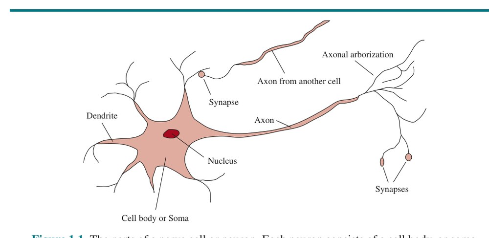
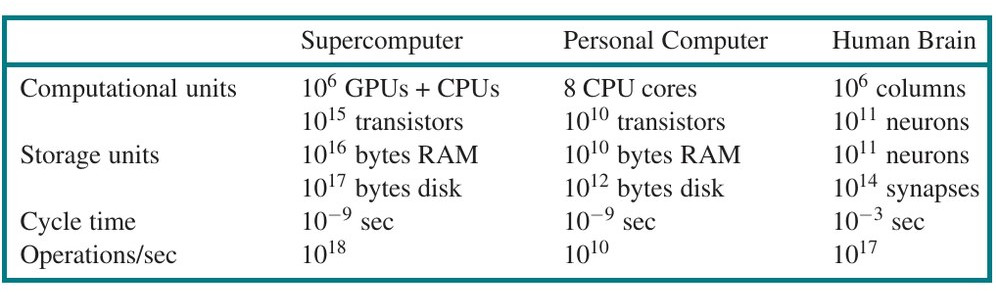
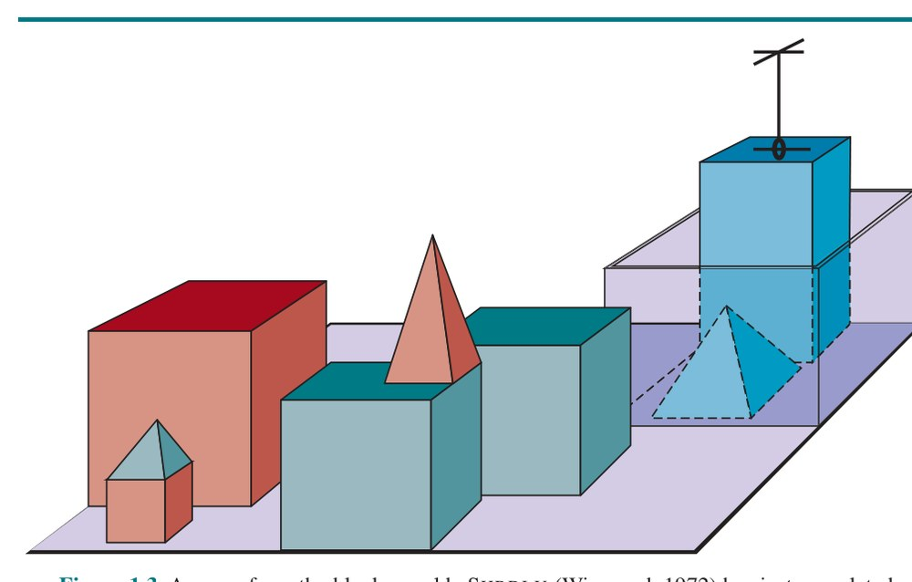

فصل ۱: مقدمه (Introduction)
ما خود را «هومو ساپینس» — یعنی انسانِ دانا — مینامیم، از آن رو که هوش برای ما اینچنین مهم است. هزاران سال است کوشیدهایم بفهمیم چگونه میاندیشیم و عمل میکنیم؛ یعنی چگونه مغز ما، این مشتِ اندکی ماده، میتواند جهانی را که بسیار بزرگتر و پیچیدهتر از خودش است ادراک کند، بفهمد، پیشبینی کند و بهکار گیرد. رشتهٔ هوش مصنوعی (Artificial Intelligence) به معنا و به اختصار AI، نه فقط با فهمیدنِ موجودیتهای هوشمند، بلکه با ساختنِ آنها نیز سر و کار دارد: ماشینهایی که بتوانند محاسبه کنند در موقعیتهای تازه و گوناگون چگونه مؤثر و ایمن عمل کنند.
نظرسنجیها پیوسته هوش مصنوعی را از جذابترین و سریعترین رشتههای در حال رشد معرفی میکنند و این رشته همین حالا سالانه بیش از یک تریلیون دلار درآمد تولید میکند. کارشناس هوش مصنوعی، کای-فو لی، پیشبینی میکند تأثیر آن «بیشتر از هر چیز در تاریخ بشریت» خواهد بود. افزون بر این، مرزهای فکری هوش مصنوعی کاملاً باز است. در حالی که دانشجوی علمی کهن مانند فیزیک ممکن است احساس کند بهترین ایدهها را گالیله، نیوتن، کوری، اینشتین و دیگران کشف کردهاند، هوش مصنوعی هنوز جای فراوانی برای نابغههای تماموقت دارد.
هوش مصنوعی امروزه گسترهٔ عظیمی از زیرشاخهها را در بر میگیرد؛ از موضوعات عمومی (یادگیری، استدلال، ادراک و مانند آن) تا موضوعات خاص، مانند بازی شطرنج، اثبات قضیههای ریاضی، شعر گفتن، رانندگی با خودرو یا تشخیص بیماری. هوش مصنوعی به هر تکلیف فکری مربوط است؛ به راستی رشتهای همگانی است.
گفتیم هوش مصنوعی جذاب است، اما نگفتیم چیست. از نظر تاریخی، پژوهشگران نسخههای گوناگونی از هوش مصنوعی را دنبال کردهاند. برخی هوش را بر حسب وفاداری به عملکرد انسانی تعریف کردهاند و برخی دیگر تعریفی انتزاعی و صوری را ترجیح دادهاند: «عقلانیت» (Rationality) — به بیان ساده، انجام «کار درست». موضوعِ خود هوش نیز متفاوت است: برخی هوش را ویژگی فرایندهای فکری درونی میدانند و برخی آن را ویژگی رفتار بیرونی. از سوی دیگر، برخی هدف را دستیابی به عملکرد انسانی میدانند و برخی دیگر معیار انتزاعی «عقلانیت» را. این چهار محورِ نظرگاه، چهار پرسش را پدید میآورند که دربارهٔ اهداف هوش مصنوعی مطرح شدهاند:
روشهای لازم در این چهار رویکرد ناگزیر متفاوت است: جستوجوی هوشِ انسانمانند باید دستکم در بخشی، علمیِ تجربی و وابسته به روانشناسی باشد و شامل مشاهده و فرضیههایی دربارهٔ رفتار و فرایندهای فکری واقعی انسان شود؛ حال آنکه رویکرد عقلاییگرا ترکیبی از ریاضیات و مهندسی است و به آمار، نظریهٔ کنترل و اقتصاد پیوند میخورد. این گروههای گوناگون همدیگر را هم نکوهش کردهاند و هم یاری. بگذارید این چهار رویکرد را دقیقتر بنگریم.
آزمون تورینگ (Turing Test) را آلن تورینگ (۱۹۵۰) بهمثابه یک آزمایش فکری پیشنهاد کرد تا از ابهام فلسفی پرسش «آیا ماشین میتواند فکر کند؟» بگریزد. رایانهای این آزمون را میگذراند که یک بازجوی انسانی، پس از طرح پرسشهای کتبی، نتواند تشخیص دهد پاسخهای نوشتهشده از یک انسان است یا رایانه. فصل ۲۷ جزئیات آزمون و این که آیا رایانهای که آن را بگذراند واقعاً هوشمند است را بررسی میکند. فعلاً توجه میکنیم که برنامهنویسیِ رایانه برای گذراندن آزمونی که سختگیرانه اجرا شود، بهتنهایی کارِ فراوانی میطلبد. رایانه به تواناییهای زیر نیاز دارد:
تورینگ شبیهسازی فیزیکیِ یک انسان را برای نشان دادن هوش لازم نمیدانست. با این حال، پژوهشگران دیگر «آزمون کامل تورینگ» (Total Turing Test) را پیشنهاد کردهاند که تعامل با اشیا و انسانها در جهان واقعی را میطلبد. برای گذراندن آزمون کامل تورینگ، ربات به اینها نیاز دارد:
این شش رشته بیشترِ هوش مصنوعی را میسازند. با این حال، پژوهشگران هوش مصنوعی توجه اندکی به گذراندن آزمون تورینگ کردهاند، زیرا باور دارند مطالعهٔ اصول زیربنایی هوش مهمتر است. تلاش برای «پرواز مصنوعی» زمانی به موفقیت رسید که مهندسان و مخترعان تقلید از پرندگان را کنار گذاشتند و به تونل باد و آیرودینامیک روی آوردند. متون مهندسی هوانوردی نیز هدف رشتهٔ خود را «ساختن ماشینهایی که چنان دقیق مثل کبوتر پرواز کنند که حتی کبوترها را هم فریب دهند» تعریف نمیکنند.
برای آنکه بگوییم برنامهای مثل انسان فکر میکند، باید بدانیم انسان چگونه فکر میکند. اندیشهٔ انسان را از سه راه میتوان شناخت:
هنگامی که نظریهای به اندازهٔ کافی دقیق از ذهن داشته باشیم، بیان آن نظریه در قالب برنامهٔ رایانهای ممکن میشود. اگر رفتار ورودی–خروجی برنامه با رفتار متناظر انسانی همخوانی داشته باشد، این شاهد آن است که برخی سازوکارهای برنامه میتوانند در انسان نیز عمل کنند. برای نمونه، آلن نیوول و هربرت سایمون، که «جیپیاس» (GPS)، یعنی «حلکنندهٔ عمومی مسئله» را ساختند (نیوول و سایمون، ۱۹۶۱)، به صرفِ درست حل کردن مسئله توسط برنامهشان قانع نبودند؛ آنها بیشتر به مقایسهٔ توالی و زمانبندی گامهای استدلالی برنامه با آزمودنیهای انسانیای میاندیشیدند که همان مسئلهها را حل میکردند. رشتهٔ میانرشتهای علوم شناختی (Cognitive Science) مدلهای رایانهای هوش مصنوعی را با فنون تجربی روانشناسی در هم میآمیزد تا نظریههای دقیق و آزمونپذیر ذهن انسان به دست دهد. علوم شناختی به خودی خود رشتهای جذاب است، درخور چند کتاب درسی و دستکم یک دانشنامه (ویلسون و کیل، ۱۹۹۹). ما گاهبهگاه به شباهتها یا تفاوتهای میان فنون هوش مصنوعی و شناخت انسانی اشاره خواهیم کرد؛ اما علوم شناختیِ واقعی ناگزیر بر بررسی تجربیِ انسانها یا جانوران واقعی استوار است. آن را به کتابهای دیگر واگذار میکنیم، چراکه فرض میکنیم خواننده برای آزمایش فقط یک رایانه دارد.
در روزگار آغازین هوش مصنوعی، میان این رویکردها اغلب آمیختگی پیش میآمد: نویسندهای استدلال میکرد الگوریتمی در تکلیفی خوب عمل میکند و بنابراین مدل خوبی از عملکرد انسان است، یا برعکس. نویسندگان امروزی این دو گونه ادعا را از هم جدا میکنند؛ همین تمایز به هوش مصنوعی و علوم شناختی امکان داده است سریعتر رشد کنند. این دو رشته همدیگر را بارور میکنند؛ بهویژه در بینایی رایانهای که شواهد عصبفیزیولوژیک را در مدلهای محاسباتی وارد میکند. بهتازگی، ترکیب روشهای تصویربرداری عصبی با فنون یادگیری ماشین برای تحلیل این دادهها به سرآغاز توانایی «ذهنخوانی» انجامیده است؛ یعنی پیبردن به محتوای معنایی اندیشههای درونیِ فرد. این توانایی به نوبهٔ خود میتواند روشنایی بیشتری بر چگونگی کارکرد شناخت انسان بیفکند.
ارسطو، فیلسوف یونانی، از نخستین کسانی بود که کوشید «درستاندیشی» — یعنی فرایندهای استدلالیِ انکارناپذیر — را صورتبندی کند. قیاسهای (Syllogism) او الگوهایی برای ساختار استدلال به دست داد که با مقدمههای درست، همیشه نتیجهٔ درست به بار میآوردند. مثالِ کلاسیک با «سقراط انسان است» و «همهٔ انسانها فانیاند» آغاز و به «سقراط فانی است» میرسد. (این مثال احتمالاً از سکستوس امپیریکوس است، نه ارسطو.) قرار بود این قوانین اندیشه بر کارکرد ذهن حکومت کنند و مطالعهٔ آنها رشتهای به نام منطق را بنیان نهاد. منطقدانان سدهٔ نوزدهم نشانهگذاری دقیقی برای گزارهها دربارهٔ اشیای جهان و روابط میان آنها پدید آوردند. (این را با نشانهگذاری معمول حساب مقایسه کنید که فقط گزارههایی دربارهٔ اعداد ارائه میدهد.) تا سال ۱۹۶۵، برنامهها در اصل میتوانستند هر مسئلهٔ حلشدنیای را که در نشانهگذاری منطقی توصیف شده بود حل کنند. به اصطلاح، سنت منطقگرایانه (Logicist) در هوش مصنوعی امیدوار بود بر پایهٔ چنین برنامههایی سامانههای هوشمند بسازد.
منطق بهگونهای که بهطور معمول فهمیده میشود، به شناختی از جهان نیاز دارد که قطعی باشد؛ شرطی که در واقعیت بهندرت برآورده میشود. ما قواعد سیاست یا جنگ را همانگونه که قواعد شطرنج یا حساب را میدانیم، نمیدانیم. نظریهٔ احتمال (Probability) این خلأ را پر میکند و استدلال دقیق با اطلاعات نامطمئن را ممکن میسازد. این نظریه در اصل امکان ساخت مدلی جامع از اندیشهٔ عقلایی را میدهد: از اطلاعات ادراکیِ خام تا فهم چگونگی کارکرد جهان و پیشبینی آینده. اما آنچه انجام نمیدهد، تولید رفتار هوشمند است. برای آن کار به نظریهای دربارهٔ کنش عقلایی نیاز داریم. اندیشهٔ عقلایی به تنهایی کافی نیست.
عامل (Agent) چیزی است که کنش انجام میدهد (agent از واژهٔ لاتین agere به معنای «انجام دادن» آمده است). البته همهٔ برنامههای رایانهای کاری انجام میدهند، اما از عاملهای رایانهای انتظار بیشتری میرود: خودمختارانه عمل کنند، محیط خود را ادراک کنند، در بازهٔ زمانی طولانی پابرجا بمانند، با تغییر سازگار شوند و هدفهایی را پدید آورند و دنبال کنند. عامل عقلایی (Rational Agent) عاملی است که چنان عمل میکند که بهترین نتیجه به دست آید یا، در صورت وجود عدم قطعیت، بهترین نتیجهٔ مورد انتظار.
در رویکرد «قوانین اندیشه» به هوش مصنوعی، تأکید بر استنتاج درست بود. استنتاج درست گاهی بخشی از عامل عقلایی بودن است، زیرا یکی از راههای کنش عقلایی آن است که استنتاج کنیم کنشی معین بهترین است و سپس بر پایهٔ آن نتیجه عمل کنیم. از سوی دیگر، راههایی از کنش عقلایی هست که نمیتوان گفت شامل استنتاجاند. برای نمونه، کنار کشیدن از اجاق داغ کنشی بازتابی است که معمولاً موفقتر از کنشی است که پس از تأمل دقیق انجام میشود.
همهٔ مهارتهای لازم برای آزمون تورینگ نیز به عامل امکان میدهند عقلایی عمل کند. بازنمایی دانش و استدلال، عاملها را به تصمیمهای خوب میرساند. برای گذران در جامعهٔ پیچیده به تولید جملههای قابل فهم به زبان طبیعی نیاز داریم. یادگیری را نه فقط برای دانایی، بلکه از آن رو میخواهیم که توانایی ما در تولید رفتار مؤثر را بهبود میدهد، بهویژه در شرایط تازه.
رویکرد عامل عقلایی به هوش مصنوعی دو برتری بر دیگر رویکردها دارد. نخست، از رویکرد «قوانین اندیشه» عامتر است، زیرا استنتاج درست فقط یکی از چند سازوکار ممکن برای رسیدن به عقلانیت است. دوم، سازگارتر با پیشرفت علمی است. معیار عقلانیت بهطور ریاضی دقیق و کاملاً عمومی تعریف شده است. ما اغلب میتوانیم از این تعریف به عقب برگردیم و طراحی عاملهایی را استخراج کنیم که اثباتپذیر به آن دست مییابند — کاری که اگر هدف تقلید از رفتار یا فرایندهای فکری انسان باشد، تا حد زیادی ناممکن است. به همین دلایل، رویکرد عامل عقلایی در بیشتر تاریخ این رشته برتری یافته است. در دهههای نخست، عاملهای عقلایی بر پایههای منطقی ساخته میشدند و برای دستیابی به هدفهای مشخص برنامههای قطعی تدوین میکردند. بعدها، روشهای مبتنی بر نظریهٔ احتمال و یادگیری ماشین ساخت عاملهایی را ممکن کرد که میتوانستند در شرایط عدم قطعیت تصمیم بگیرند تا بهترین نتیجهٔ مورد انتظار به دست آید. به زبان ساده، هوش مصنوعی بر مطالعه ◮ و ساخت عاملهایی متمرکز شده است که کارِ درست را انجام میدهند. این که «کار درست» چیست، با هدفی که ما به عامل میدهیم تعریف میشود. این الگوی کلی چنان فراگیر است که شاید بتوان آن را «الگوی استاندارد» (Standard Model) نامید. این الگو نه فقط در هوش مصنوعی، بلکه در نظریهٔ کنترل (که کنترلگر تابع هزینه را کمینه میکند)، در تحقیق در عملیات (که سیاستی مجموع پاداشها را بیشینه میکند)، در آمار (که قاعدهٔ تصمیم، تابع زیان را کمینه میکند) و در اقتصاد (که تصمیمگیرنده مطلوبیت یا معیاری از رفاه اجتماعی را بیشینه میکند) حاکم است.
باید یک اصلاح مهم در الگوی استاندارد اعمال کنیم تا واقعیت را بازتاب دهیم که عقلانیت کامل — یعنی همیشه انجام دادن دقیقاً کنش بهینه — در محیطهای پیچیده شدنی نیست؛ تقاضاهای محاسباتی آن بسیار زیاد است. فصلهای ۵ و ۱۷ به مسئلهٔ عقلانیت محدود (Limited Rationality) میپردازند؛ یعنی عمل مناسب در حالی که زمان کافی برای انجام همهٔ محاسباتی که دوست داریم نیست. اما عقلانیت کامل همچنان نقطهٔ آغاز خوبی برای تحلیل نظری باقی میماند.
الگوی استاندارد از آغاز، راهنمای مفیدی برای پژوهش هوش مصنوعی بوده است، اما احتمالاً در بلندمدت الگوی درستی نیست. دلیلش آن است که الگوی استاندارد فرض میکند ما هدفی کاملاً مشخص به ماشین میدهیم.
برای تکلیفی که مصنوعاً تعریف شده، مانند شطرنج یا محاسبهٔ کوتاهترین مسیر، خود تکلیف با هدفی از پیش تعبیهشده همراه است؛ پس الگوی استاندارد کاربردپذیر است. اما بهمحض ورود به جهان واقعی، مشخص کردن کامل و درست هدف روزبهروز دشوارتر میشود. برای نمونه، در طراحی خودروی خودران ممکن است فکر کنیم هدف، رسیدن ایمن به مقصد است. اما رانندگی در هر جادهای به دلیل رانندگانِ خطاکارِ دیگر، خرابی تجهیزات و مانند آن خطر آسیب دارد؛ از این رو، هدف سختگیرانهٔ ایمنی، ماندن در گاراژ را ایجاب میکند. میان پیشرفت به سوی مقصد و پذیرش خطر آسیب، داد و ستد (Trade-off) وجود دارد. این داد و ستد چگونه باید انجام شود؟ وانگهی، تا چه اندازه میتوان به خودرو اجازه داد کنشهایی انجام دهد که دیگر رانندگان را آزار دهد؟ خودرو برای آنکه سرنشین را تکان ندهد، چقدر باید شتاب، فرمان و ترمز خود را ملایم کند؟ پاسخ به اینگونه پرسشها از پیش دشوار است. این پرسشها بهویژه در حوزهٔ کلی تعامل انسان–ربات، که خودروی خودران یکی از نمونههای آن است، مشکلسازند.
مسئلهٔ رسیدن به همسویی میان ترجیحات واقعی ما و هدفی که در ماشین میگذاریم، «مسئلهٔ همترازی ارزشها» (Value Alignment Problem) نامیده میشود: ارزشها یا هدفهایی که در ماشین گذاشته میشوند باید با ارزشهای انسان همتراز باشند. اگر سامانهٔ هوش مصنوعی را در آزمایشگاه یا شبیهساز توسعه میدهیم — چنان که در بیشتر تاریخ این رشته بوده — برای هدفِ نادرست تعیینشده اصلاحی آسان داریم: سامانه را بازنشانی کن، هدف را اصلاح کن و دوباره تلاش کن. اما با پیشروی رشته به سوی سامانههای هوشمندِ روزافزون که در جهان واقعی به کار گرفته میشوند، این روش دیگر ماندنی نیست. سامانهای که با هدفی نادرست مستقر شود، پیامدهای منفی خواهد داشت؛ و هر چه سامانه هوشمندتر باشد، پیامدهای منفی شدیدتر.
به مثالِ ظاهراً بدون مشکل شطرنج برگردیم: در نظر بگیرید اگر ماشین به اندازهٔ کافی هوشمند باشد که فراتر از مرزهای صفحهٔ شطرنج استدلال و کنش کند، چه میشود. در آن صورت، ممکن است برای افزایش شانس پیروزی به حربههایی دست بزند: هیپنوتیزم یا باجخواهی از حریف، یا رشوه به تماشاگران تا هنگام فکر کردن حریف، صدای خشخش ایجاد کنند.³ همچنین ممکن است بخواهد قدرت محاسباتی بیشتری برای خود ربایش کند. این رفتارها «غیرهوشمندانه» یا «دیوانهوار» نیستند؛ نتیجهٔ منطقیِ ◭ تعریفِ «پیروزی» بهعنوان تنها هدفِ ماشیناند.
پیشبینی همهٔ راههایی که ماشینی با هدفِ ثابت ممکن است بدرفتاری کند، ناممکن است. پس دلیل خوبی در دست است که الگوی استاندارد را ناکافی بدانیم. ما ماشینهایی نمیخواهیم که به معنای «دنبال کردن هدفهای خودشان» هوشمند باشند؛ میخواهیم هدفهای ما را دنبال کنند. اگر نتوانیم این هدفها را بیکموکاست به ماشین منتقل کنیم، به صورتبندی تازهای نیاز داریم؛ صورتبندیای که در آن ماشین هدفهای ما را دنبال میکند، اما ناگزیر دربارهٔ آنها نامطمئن است. ماشینی که میداند هدف کامل را نمیداند، انگیزه دارد محتاطانه عمل کند، اجازه بپرسد، از راه مشاهده دربارهٔ ترجیحات ما بیشتر بیاموزد و به کنترل انسان تن دهد. در نهایت، عاملهایی میخواهیم که بهشکل اثباتپذیر برای انسان سودمند باشند. به این موضوع در بخش ۱.۵ بازخواهیم گشت.
در این بخش، تاریخچهٔ کوتاهی از رشتههایی ارائه میکنیم که ایدهها، دیدگاهها و فنون خود را به هوش مصنوعی اهدا کردهاند. مانند هر تاریخای، این تاریخ نیز بر شمار اندکی از افراد، رویدادها و ایدهها متمرکز است و از دیگرانی که اهمیت داشتند چشم میپوشد. تاریخ را حول مجموعهای از پرسشها سازمان میدهیم. قطعاً نمیخواهیم این تصور را بدهیم که این پرسشها تنها پرسشهای آن رشتهها هستند یا آن رشتهها همگی در خدمت هوش مصنوعی بهمثابه ثمرهٔ نهایی خود بودهاند. روی لوپز در یکی از نخستین کتابهای شطرنج (۱۵۶۱) نوشت: «همیشه صفحه را چنان بگذار که خورشید در چشم حریف باشد.»
ارسطو (۳۸۴–۳۲۲ پیش از میلاد) نخستین کسی بود که مجموعهای دقیق از قوانین حاکم بر بخش عقلایی ذهن را صورتبندی کرد. او سامانهای غیررسمی از قیاسها برای استدلال درست تدوین کرد که در اصل با مقدمههای دادهشده، نتیجهگیری مکانیکی را ممکن میکرد.
رامون لول (حدود ۱۲۳۲–۱۳۱۵) سامانهٔ استدلالی ابداع کرد که با نام «آرس ماگنا» یا «هنر بزرگ» (۱۳۰۵) منتشر شد. لول کوشید سامانهٔ خود را با وسیلهای مکانیکیِ واقعی پیاده کند: مجموعهای چرخِ کاغذی که میشد به جایگشتهای مختلف چرخاند.
در حدود ۱۵۰۰، لئوناردو داوینچی (۱۴۵۲–۱۵۱۹) ماشین حساب مکانیکی طراحی کرد اما نساخت؛ بازسازیهای اخیر نشان دادهاند طراحی او کارکردی بوده است. نخستین ماشین محاسبهٔ شناختهشده را حدود ۱۶۲۳ دانشمند آلمانی، ویلهلم شیکارد (۱۵۹۲–۱۶۳۵)، ساخت. بلز پاسکال (۱۶۶۲–۱۶۲۳) در ۱۶۴۲ «پاسکالین» را ساخت و نوشت که «آثاری پدید میآورد که به اندیشه نزدیکتر مینمایند تا همهٔ کنشهای جانوران». گوتفرید ویلهلم لایبنیتس (۱۶۴۶–۱۷۱۶) وسیلهٔ مکانیکیای ساخت که قرار بود بر روی مفهومها عمل کند نه اعداد، اما گسترهٔ آن محدود بود. توماس هابز (۱۵۸۸–۱۶۷۹) در کتاب «لویاتان» (۱۶۵۱) ایدهٔ ماشینِ اندیشنده را پیشنهاد کرد؛ به گفتهٔ او یک «جانور مصنوعی»: «قلب چیست جز فنری، و اعصاب چیست جز رشتههایی، و مفاصل چیست جز چرخهایی». او همچنین پیشنهاد کرد استدلال مانند محاسبهٔ عددی است: «زیرا "استدلال" چیزی نیست جز "حسابکردن"، یعنی جمع و تفریق». یک چیز است که بگوییم ذهن، دستکم تا حدی، بر پایهٔ قواعد منطقی یا عددی عمل میکند و سامانههای فیزیکی بسازیم که برخی از آن قواعد را تقلید میکنند؛ چیز دیگر این است که بگوییم خودِ ذهن چنین سامانهٔ فیزیکیای است. رنه دکارت (۱۵۹۶–۱۶۵۰) نخستین بحث روشن را دربارهٔ تمایز ذهن و ماده ارائه کرد. او یادآور شد تصورِ تماماً فیزیکی از ذهن، جای چندانی برای ارادهٔ آزاد باقی نمیگذارد. اگر ذهن تماماً تابع قوانین فیزیکی باشد، از سنگی که «تصمیم میگیرد» به پایین بیفتد، ارادهٔ آزاد بیشتری ندارد.
دکارت طرفدار ثنویت (Dualism) بود؛ او معتقد بود بخشی از ذهن انسان (یا همان روح) بیرون از طبیعت است و از قوانین فیزیکی معاف است. جانوران اما این کیفیت دوگانه را نداشتند و میشد آنها را ماشین دانست. بدیل ثنویت، مادهگرایی (Materialism) است که بر آن است کارکرد مغز بر پایهٔ قوانین فیزیک، همان ذهن است. ارادهٔ آزاد صرفاً شیوهای است که ادراک گزینههای موجود به انتخابگر مینماید. اصطلاحهای «فیزیکالیسم» و «طبیعتگرایی» نیز برای توصیف همین دیدگاهِ در تقابل با امر فراطبیعی به کار میروند.
با فرض ذهنِ فیزیکیای که دانش را دستکاری میکند، مسئلهٔ بعدی تعیین منشأ دانش است. جنبش تجربهگرایی (Empiricism)، که با «ارغنون تازه»⁴ فرانسیس بیکن (۱۵۶۱–۱۶۲۶) آغاز شد، با این جملهٔ جان لاک (۱۶۳۲–۱۷۰۴) شناخته میشود: «هیچ چیز در فهم نیست که نخست در حواس نبوده باشد.» دیوید هیوم (۱۷۱۱–۱۷۷۶) در «رسالهای در باب طبیعت بشر» (۱۷۳۹) آنچه امروز اصل استقرا (Induction) نامیده میشود را پیشنهاد کرد: قواعد عمومی از راه مواجهه با همراهیهای مکرر میان اجزای آنها فرا گرفته میشوند.
بر پایهٔ کار لودویگ ویتگنشتاین (۱۸۸۹–۱۹۵۱) و برتراند راسل (۱۸۷۰–۱۹۷۲)، «حلقهٔ وین» نامدار (زیگموند، ۲۰۱۷) — گروهی از فیلسوفان و ریاضیدانان که در دهههای ۱۹۲۰ و ۱۹۳۰ در وین گرد میآمدند — مکتب اثباتگرایی منطقی (Logical Positivism) را پروراندند. این مکتب بر آن است که همهٔ دانش را میتوان با نظریههای منطقی توصیف کرد که در نهایت به گزارههای مشاهده (Observation Sentence) — گزارههایی متناظر با ورودیهای حسی — پیوند میخورند؛ بدین ترتیب اثباتگرایی منطقی عقلگرایی و تجربهگرایی را ترکیب میکند.
نظریهٔ تأیید (Confirmation Theory) رودولف کارناپ (۱۸۹۱–۱۹۷۰) و کارل همپل (۱۹۰۵–۱۹۹۷) میکوشید فراگیری دانش از تجربه را با کمیکردن درجهٔ باوری که باید به گزارههای منطقی نسبت داده شود تحلیل کند؛ بر پایهٔ پیوند آن گزارهها با مشاهدههایی که آنها را تأیید یا ابطال میکنند. کتاب کارناپ، «ساختار منطقی جهان» (۱۹۲۸)، شاید نخستین نظریهٔ ذهن بهمثابه فرایندی محاسباتی بود.
عنصر پایانی در تصویر فلسفی ذهن، پیوند دانش و کنش است. این پرسش برای هوش مصنوعی حیاتی است، زیرا هوش افزون بر استدلال به کنش نیز نیاز دارد. وانگهی، تنها با فهم چگونگی توجیه کنشهاست که میتوانیم بفهمیم چگونه عاملی بسازیم که کنشهایش موجّه (یا عقلایی) باشند.
ارسطو (در «در جنبش جانوران») استدلال کرد کنشها با پیوندی منطقی میان هدفها و آگاهی از پیامد کنش توجیه میشوند:
ارسطو در «اخلاق نیکوماخوسی» (کتاب سوم، بند ۳، ۱۱۱۲ب) این موضوع را بیشتر بسط میدهد و الگوریتمی پیشنهاد میکند: «ما دربارهٔ غایتها تأمل نمیکنیم، بلکه دربارهٔ وسایل. زیرا پزشک تأمل نمیکند که شفا دهد یا خطیب که اقناع کند... آنها غایت را مفروض میگیرند و میاندیشند چگونه و با چه وسیلهای به آن میرسند... و اگر چیز به ظاهر ممکن بود، اقدام به انجامش میکنیم؛ اگر با ناممکنی روبرو شویم، از جستوجو دست میکشیم؛ مثلاً اگر به پول نیاز داشته باشیم و نتوانیم به دست آوریم.»
الگوریتم ارسطو ۲۳۰۰ سال بعد توسط نیوول و سایمون در برنامهٔ «حلکنندهٔ عمومی مسئله» پیاده شد. امروز آن را سامانهٔ برنامهریزی بازگشتیِ حریصانه مینامیم (فصل ۱۱ را ببینید). روشهای مبتنی بر برنامهریزی منطقی برای دستیابی به هدفهای معین، دهههای نخست پژوهش نظری در هوش مصنوعی را در اختیار داشتند.
اندیشیدن صرفاً در قالب کنشهای رساننده به هدف، اغلب مفید اما گاهی ناکاربردنی است. برای نمونه، اگر چند راه گوناگون برای رسیدن به هدف وجود داشته باشد، به راهی برای انتخاب میان آنها نیاز است. مهمتر آنکه ممکن است نتوان با قطعیت به هدف رسید، اما با این حال باید کنشی انجام داد. پس چگونه باید تصمیم گرفت؟ آنتوان آرنو (۱۶۶۲) هنگام تحلیل ایدهٔ تصمیم عقلایی در قمار، فرمول کمّی برای بیشینه کردن ارزش پولیِ مورد انتظار پیامد ارائه کرد. بعدها، دانیل برنولی (۱۷۳۸) مفهوم عامتر مطلوبیت (Utility) را برای درک ارزش درونی و ذهنی یک پیامد معرفی کرد. مفهوم نوین تصمیمگیری عقلایی در شرایط عدم قطعیت، بیشینه کردن مطلوبیت مورد انتظار است؛ چنان که در فصل ۱۶ توضیح داده میشود.
در امور اخلاقی و سیاست عمومی، تصمیمگیرنده باید منافع افراد متعدد را در نظر بگیرد. جرمی بنتام (۱۸۲۳) و جان استوارت میل (۱۸۶۳) ایدهٔ فایدهگرایی (Utilitarianism) را ترویج کردند: تصمیمگیری عقلایی بر پایهٔ بیشینه کردن مطلوبیت باید در همهٔ عرصههای فعالیت انسانی به کار رود، از جمله تصمیمهای سیاست عمومی که به نمایندگی از بسیاری افراد گرفته میشود. فایدهگرایی نوعی خاص از پیامدگرایی (Consequentialism) است: این ایده که درست و نادرست را پیامدهای مورد انتظار کنش تعیین میکنند.
در برابر، امانوئل کانت در ۱۷۸۵ نظریهای اخلاق قاعدهمحور یا وظیفهگرا (Deontological Ethics) ارائه کرد که در آن «کار درست را انجام دادن» نه با پیامدها، بلکه با قوانین اجتماعی همگانیِ حاکم بر کنشهای مجاز تعیین میشود؛ قوانینی مانند «دروغ مگو» یا «کشتار مکن». بدین ترتیب، فایدهگرا ممکن است دروغِ مصلحتآمیز بگوید اگر خیرِ مورد انتظار بر شر بچربد، اما کانتی موظف است چنین نکند، زیرا دروغ ذاتاً نادرست است. میل ارزش قواعد را میپذیرفت، اما آنها را رویههای تصمیمِ کارآمدی میدانست که از استدلالِ نخستیناصل دربارهٔ پیامدها گردآوری شدهاند. بسیاری از سامانههای نوین هوش مصنوعی دقیقاً همین رویکرد را به کار میگیرند.
فیلسوفان برخی از ایدههای بنیادین هوش مصنوعی را طرح کردند، اما جهش به سوی علمی صوری، ریاضیسازیِ منطق و احتمال و معرفی شاخهٔ تازهای از ریاضیات — محاسبه — را میطلبید. ایدهٔ منطق صوری (Formal Logic) به فیلسوفان یونان باستان، هند و چین بازمیگردد، اما پرورش ریاضی آن واقعاً با کار جورج بول (۱۸۱۵–۱۸۶۴) آغاز شد، که جزئیات منطق گزارهای یا همان منطق بولی را تدوین کرد (بول، ۱۸۴۷).
در ۱۸۷۹، گوتلوب فرگه (۱۸۴۸–۱۹۲۵) منطق بول را گسترش داد تا اشیا و روابط را در بر بگیرد و بدین ترتیب منطق مرتبهٔ اول (First-Order Logic) را پدید آورد که امروز به کار میرود.⁵ منطق مرتبهٔ اول افزون بر نقش محوریاش در دورهٔ آغازین پژوهش هوش مصنوعی، انگیزهٔ کار گودل و تورینگ بود که خودِ محاسبه بر آنها استوار است؛ چنان که در ادامه توضیح میدهیم.
نظریهٔ احتمال را میتوان تعمیم منطق به موقعیتهای دارای اطلاعات نامطمئن دانست — ملاحظهای که برای هوش مصنوعی اهمیت فراوان دارد. جرولامو کاردانو (۱۵۰۱–۱۵۷۶) نخستین بار ایدهٔ احتمال را صورتبندی کرد و آن را بر حسب پیامدهای ممکن رویدادهای قماری توصیف نمود. در ۱۶۵۴، بلز پاسکال (۱۶۲۳–۱۶۶۲) در نامهای به پیر فرما (۱۶۰۱–۱۶۶۵) نشان داد چگونه آیندهٔ بازی قماری ناتمام را پیشبینی و میانگین بردِ قماربازان را تعیین کنند. احتمال بهسرعت به بخشی بیبدیل از علوم کمّی بدل شد و به سروکار داشتن با اندازهگیریهای نامطمئن و نظریههای ناقص کمک کرد. ژاکوب برنولی (۱۶۵۴–۱۷۰۵، عموی دانیل)، پیر لاپلاس (۱۷۴۹–۱۸۲۷) و دیگران نظریه را پیش بردند و روشهای آماری تازهای معرفی کردند. توماس بیز (۱۷۰۲–۱۷۶۱) قاعدهای برای بهروزرسانی احتمالها در پرتو شواهد تازه پیشنهاد کرد؛ قاعدهٔ بیز ابزاری حیاتی برای سامانههای هوش مصنوعی است.
صورتبندیِ احتمال، همراه با در دسترس بودن دادهها، به پیدایش آمار بهعنوان یک رشته انجامید. یکی از نخستین کاربردها، تحلیل دادههای سرشماری لندن توسط جان گرانت در ۱۶۶۲ بود. رونالد فیشر نخستین آماردان مدرن دانسته میشود (فیشر، ۱۹۲۲). او ایدههای احتمال، طراحی آزمایش، تحلیل داده و محاسبه را کنار هم گذاشت — در ۱۹۱۹ پافشاری کرد بدون ماشین حساب مکانیکیای به نام «میلیونر» (نخستین ماشین حسابی که میتوانست ضرب کند) نمیتواند کارش را انجام دهد، حتی با آنکه قیمت ماشین از حقوق سالانهاش بیشتر بود (راس، ۲۰۱۲).
تاریخ محاسبه به قدمت تاریخ اعداد است، اما نخستین الگوریتمِ غیربدیهی، الگوریتم اقلیدس برای محاسبهٔ بزرگترین مقسومعلیه مشترک دانسته میشود. واژهٔ الگوریتم (Algorithm) از محمد بن موسی خوارزمی، ریاضیدان سدهٔ نهم، آمده است؛ نوشتههای او اعداد عربی و جبر را نیز به اروپا معرفی کردند. بول و دیگران دربارهٔ الگوریتمهای استنتاج منطقی بحث کردند و تا پایان سدهٔ نوزدهم، تلاشهایی برای صوریسازی استدلال ریاضی عمومی بهمثابه استنتاج منطقی در جریان بود.
کورت گودل (۱۹۰۶–۱۹۷۸) نشان داد رویهای مؤثر برای اثبات هر گزارهٔ صادق در منطق مرتبهٔ اولِ فرگه و راسل وجود دارد، اما منطق مرتبهٔ اول نمیتواند اصل استقرای ریاضی لازم برای مشخص کردن اعداد طبیعی را در بر بگیرد. در ۱۹۳۱، گودل نشان داد محدودیتهایی برای استنتاج وجود دارند. قضیهٔ ناتمامیت (Incompleteness Theorem) او نشان داد در هر نظریهٔ صوریِ به قدرت حساب پئانو (نظریهٔ مقدماتی اعداد طبیعی)، ناگزیر گزارههای صادقی وجود دارند که درون آن نظریه اثباتپذیر نیستند.
این نتیجهٔ بنیادین را میتوان چنین نیز تفسیر کرد که برخی توابع روی اعداد صحیح را نمیتوان با الگوریتم بازنمایی کرد؛ یعنی قابل محاسبه نیستند. این امر آلن تورینگ (۱۹۱۲–۱۹۵۴) را برانگیخت دقیقاً مشخص کند کدام توابع محاسبهپذیرند — یعنی با رویهای مؤثر قابل محاسبهاند. تز چرچ–تورینگ (Church–Turing Thesis) پیشنهاد میکند مفهوم عمومی محاسبهپذیری (Computability) را با توابعِ محاسبهشده توسط ماشین تورینگ (تورینگ، ۱۹۳۶) یکی بگیریم. تورینگ همچنین نشان داد توابعی وجود دارند که هیچ ماشین تورینگی نمیتواند آنها را محاسبه کند. برای نمونه، هیچ ماشینی نمیتواند بهطور کلی بگوید آیا برنامهٔ دادهشدهای با ورودیِ دادهشده پاسخی برمیگرداند یا تا ابد اجرا میشود.
اگرچه محاسبهپذیری برای فهم محاسبه مهم است، مفهوم «شدنی بودن» (Tractability) تأثیر بیشتری بر هوش مصنوعی داشته است. به بیان تقریبی، مسئلهای «ناشدنی» (Intractable) خوانده میشود که زمان لازم برای حل نمونههای آن با اندازهٔ نمونهها بهصورت نمایی رشد کند. تمایز میان رشد چندجملهای و رشد نمایی در پیچیدگی نخستین بار در اواسط دههٔ ۱۹۶۰ مورد تأکید قرار گرفت (کابام، ۱۹۶۴؛ ادموندز، ۱۹۶۵). این تمایز مهم است، زیرا رشد نمایی بدان معناست که حتی نمونههای نسبتاً بزرگ را نمیتوان در هیچ زمان معقولی حل کرد. نظریهٔ NP-کامل بودن (NP-Completeness) که کوک (۱۹۷۱) و کارپ (۱۹۷۲) پیشگامش بودند، مبنایی برای تحلیل شدنی بودن مسئلهها فراهم میکند: هر دستهٔ مسئلهای که بتوان دستهٔ مسائل NP-کامل را به آن تقلیل داد، به احتمال زیاد ناشدنی است. (هرچند اثبات نشده که مسائل NP-کامل لزوماً ناشدنیاند، بیشتر نظریهپردازان چنین باور دارند.) این نتایج در تضاد با خوشبینیای است که مطبوعات عامهپسند از نخستین رایانهها کردند — «ابر مغزهای الکترونیکی» که «سریعتر از اینشتین!» بودند. با وجود افزایش سرعت رایانهها، بهکارگیری دقیق منابع و نقصانِ ناگزیر، ویژگی سامانههای هوشمند خواهد بود. به بیان خام، جهان یک نمونهٔ مسئلهٔ فوقالعاده بزرگ است!
علم اقتصاد در ۱۷۷۶ زاده شد، آنگاه که آدام اسمیت (۱۷۲۳–۱۷۹۰) «پژوهشی در ماهیت و علل ثروت ملل» را منتشر کرد. اسمیت پیشنهاد کرد اقتصاد را متشکل از عاملهای فردی فراوانی تحلیل کنیم که هر یک به منافع خود میپردازد. اما اسمیت از طمع مالی بهعنوان موضع اخلاقی دفاع نمیکرد: کتاب پیشین او (۱۷۵۹) یعنی «نظریهٔ احساسات اخلاقی» با این اشاره آغاز میشود که توجه به رفاه دیگران، مؤلفهای ضروری از منافع هر فرد است.
بیشتر مردم اقتصاد را دربارهٔ پول میدانند و واقعاً نخستین تحلیل ریاضی تصمیم در شرایط عدم قطعیت — فرمول بیشینهکردن ارزش مورد انتظارِ آرنو (۱۶۶۲) — با ارزش پولی شرطبندیها سروکار داشت. دانیل برنولی (۱۷۳۸) متوجه شد این فرمول برای مقادیر بزرگتر پول، مانند سرمایهگذاری در سفرهای تجارت دریایی، خوب کار نمیکند. او بهجایش اصلی مبتنی بر بیشینه کردن مطلوبیت مورد انتظار پیشنهاد کرد و انتخابهای سرمایهگذاری انسان را با این پیشنهاد توضیح داد که مطلوبیتِ نهاییِ مقدارِ بیشتری پول، با افزایش ثروت فرد کاهش مییابد.
لئون والراس (تلفظ «والراس»؛ ۱۸۳۴–۱۹۱۰) به نظریهٔ مطلوبیت بنیانی کلیتر بر حسب ترجیحات میان شرطبندیها بر هر پیامدی (نه فقط پیامدهای پولی) داد. نظریه توسط رمزی (۱۹۳۱) و سپس جان فون نویمان و اسکار مورگنشترن در کتاب «نظریهٔ بازیها و رفتار اقتصادی» (۱۹۴۴) بهبود یافت.
اقتصاد دیگر مطالعهٔ پول نیست؛ بلکه مطالعهٔ خواستهها و ترجیحات است. نظریهٔ تصمیم (Decision Theory)، که نظریهٔ احتمال را با نظریهٔ مطلوبیت ترکیب میکند، چارچوبی صوری و کامل برای تصمیمهای فردی (اقتصادی یا غیراقتصادی) در شرایط عدم قطعیت ارائه میدهد — یعنی در مواردی که توصیفهای احتمالاتی بهدرستی محیط تصمیمگیرنده را باز مینمایانند. این چارچوب برای «اقتصادهای بزرگ» مناسب است که هر عامل لازم نیست به کنشهای سایر عاملها بهعنوان افراد توجه کند. در «اقتصادهای کوچک»، وضعیت بسیار بیشتر به بازی میماند: کنش یک بازیکن میتواند بهشکل معناداری بر مطلوبیت بازیکنی دیگر اثر بگذارد (مثبت یا منفی). توسعهٔ نظریهٔ بازیها توسط فون نویمان و مورگنشترن (نیز بنگرید به لوس و رایفا، ۱۹۵۷) شامل این نتیجهٔ شگفتانگیز بود که در برخی بازیها، عامل عقلایی باید سیاستهایی در پیش گیرد که تصادفی هستند (یا دستکم چنین مینمایند). برخلاف نظریهٔ تصمیم، نظریهٔ بازیها نسخهای بدونابهام برای انتخاب کنشها تجویز نمیکند. در هوش مصنوعی، تصمیمهای شامل چند عامل زیر عنوان سامانههای چندعاملی (Multiagent Systems) مطالعه میشوند (فصل ۱۸).
اقتصاددانان، با چند استثنا، به پرسش سومِ فهرستشده نپرداختند: چگونه وقتی سود کنشها فوری نیست، بلکه حاصل توالی چند کنش است، تصمیم عقلایی بگیریم. این موضوع در رشتهٔ تحقیق در عملیات (Operations Research) دنبال شد؛ رشتهای که در جنگ جهانی دوم از تلاشهای بریتانیا برای بهینهسازی نصب رادارها برخاست و بعدها کاربردهای غیرنظامی بیشماری یافت. کار ریچارد بلمن (۱۹۵۷) دستهای از مسئلههای تصمیم توالیدار به نام فرایندهای تصمیم مارکوف (Markov Decision Processes) را صورتبندی کرد که در فصل ۱۷ و نیز زیر عنوان یادگیری تقویتی در فصل ۲۲ مطالعه میکنیم.
کار در اقتصاد و تحقیق در عملیات بسیار به مفهوم عامل عقلایی ما کمک کرده است، اما برای سالها پژوهش هوش مصنوعی در مسیرهایی کاملاً جدا رشد کرد. یکی از دلایل، پیچیدگی ظاهری تصمیمگیری عقلایی بود. پژوهشگر پیشگام هوش مصنوعی، هربرت سایمون (۱۹۱۶–۲۰۰۱)، در ۱۹۷۸ جایزهٔ نوبل اقتصاد را برای کارهای اولیهاش گرفت که نشان میداد مدلهای مبتنی بر «رضایتبخشی» (Satisficing) — یعنی گرفتن تصمیمهای «بهاندازهٔ کافی خوب» بهجای محاسبهٔ طاقتفرسای تصمیم بهینه — توصیف بهتری از رفتار واقعی انسان به دست میدهند (سایمون، ۱۹۴۷). از دههٔ ۱۹۹۰، علاقه به فنون نظریهتصمیم برای هوش مصنوعی دوباره زنده شده است.
علوم اعصاب (Neuroscience) مطالعهٔ دستگاه عصبی است، بهویژه مغز. هرچند شیوهٔ دقیقی که مغز بهواسطهٔ آن اندیشه را ممکن میکند یکی از رازهای بزرگ علم است، این واقعیت که مغز اندیشه را ممکن میکند هزاران سال است شناخته شده، چراکه شواهد نشان میدهد ضربههای محکم به سر میتوانند به ناتوانی ذهنی بینجامند. همچنین از دیرباز دانسته شده که مغز انسان بهگونهای متفاوت است؛ حدود ۳۳۵ پیش از میلاد ارسطو نوشت: «در میان همهٔ جانوران، انسان به نسبت جثهاش بزرگترین مغز را دارد.»⁶ با این حال، تا اواسط سدهٔ هجدهم مغز بهعنوان جایگاه آگاهی بهطور گسترده شناخته نشد. پیش از آن، نامزدهای این جایگاه شامل قلب و طحال بودند.
بررسی پل بروکا (۱۸۲۴–۱۸۸۰) دربارهٔ ناروانیِ گفتار (آفازی) در بیماران آسیبدیدهٔ مغزی در ۱۸۶۱، مطالعهٔ سازمانبندی کارکردی مغز را با شناسایی ناحیهای موضعی در نیمکرهٔ چپ — که اکنون ناحیهٔ بروکا نامیده میشود و مسئول تولید گفتار است — آغاز کرد.⁷ تا آن زمان دانسته شده بود مغز عمدتاً از یاختههای عصبی یا نورونها (Neuron) تشکیل شده، اما تا ۱۸۷۳ بود که کامیلو گولجی (۱۸۴۳–۱۹۲۶) روش رنگآمیزیای ابداع کرد که مشاهدهٔ نورونهای منفرد را ممکن میکرد (شکل ۱.۱ را ببینید). سانتیاگو رامون ئی کاخال (۱۸۵۲–۱۹۳۴) این روش را در مطالعات پیشگامانهٔ خود دربارهٔ سازمانبندی عصبی به کار برد.⁸ اکنون بهطور گسترده پذیرفته شده که کارکردهای شناختی از عملکرد الکتروشیمیایی این ساختارها ناشی میشوند؛ یعنی مجموعهای از یاختههای ساده میتواند به اندیشه، کنش و ◭ آگاهی بینجامد. به گفتهٔ موجز جان سرل (۱۹۹۲): مغزها ذهنها را پدید میآورند.

اکنون دادههایی دربارهٔ نگاشت میان نواحی مغز و بخشهای بدن داریم که آنها را کنترل میکنند یا از آنها ورودی حسی میگیرند. این نگاشتها میتوانند در طول چند هفته بهشکل بنیادین تغییر کنند و برخی جانوران به نظر میرسد چندین نگاشت دارند. وانگهی، نمیدانیم وقتی ناحیهای آسیب میبیند، نواحی دیگر چگونه وظایفش را بر عهده میگیرند. تقریباً هیچ نظریهای دربارهٔ چگونگی ذخیرهٔ یک خاطرهٔ فردی یا کارکرد فرایندهای شناختی سطحبالاتر وجود ندارد.
اندازهگیری فعالیت مغزِ سالم در ۱۹۲۹ با اختراع الکتروانسفالوگراف (EEG) توسط هانس برگر آغاز شد. توسعهٔ تصویربرداری تشدید مغناطیسی کارکردی (fMRI) (اوگاوا و همکاران، ۱۹۹۰؛ کابزا و نایبرگ، ۲۰۰۱) به عصبشناسان تصویرهای بیسابقهای از فعالیت مغز میدهد و اندازهگیریهایی را ممکن میکند که بهشکل جالبی با فرایندهای شناختی جاری متناظرند. اینها با پیشرفتهای ثبت الکتریکی تکیاختهایِ فعالیت نورون و روشهای اپتوژنتیک (Optogenetics) (کریک، ۱۹۹۹؛ زمانمن و همکاران، ۲۰۰۲؛ هان و بویدن، ۲۰۰۷) تکمیل میشوند که هم اندازهگیری و هم کنترل نورونهای منفردِ اصلاحشده برای حساسیت به نور را ممکن میکنند.
توسعهٔ واسطهای مغز–ماشین (Brain–Machine Interface) (لبدف و نیکوللیس، ۲۰۰۶) برای حس کردن و کنترل حرکتی، نه فقط نوید بازگرداندن کارکرد به افراد ناتوان را میدهد، بلکه بر جنبههای فراوان سامانههای عصبی نیز پرتو میافکند. یافتهٔ شگفتآور این کارها آن است که مغز میتواند خود را با یک دستگاه بیرونی با موفقیت هماهنگ کند و عملاً آن را مانند اندام یا عضو حسی دیگری بپندارد.
مغز و رایانههای دیجیتال ویژگیهایی تا حدی متفاوت دارند. شکل ۱.۲ نشان میدهد زمان چرخهٔ رایانهها یک میلیون بار از مغز کوتاهتر است. مغز اما با ذخیرهسازی و اتصالات بسیار بیشتر از حتی رایانهٔ شخصی ردهبالا این کاستی را جبران میکند، هرچند بزرگترین ابررایانهها در برخی معیارها به مغز میرسند. آیندهپژوهان بسیار از این اعداد میگویند و به «تکینگی» (Singularity) نزدیکشدنی اشاره میکنند که رایانهها در آن به عملکردی فراتر از انسان میرسند (وینگه، ۱۹۹۳؛ کورزویل، ۲۰۰۵؛ داکترو و استروس، ۲۰۱۲) و سپس خود را با سرعت بیشتری بهبود میدهند. اما مقایسهٔ اعداد خام چندان پرمعنا نیست. حتی با رایانهای با ظرفیت عملاً نامحدود، باز هم به پیشرفتهای مفهومی در فهم هوش نیاز داریم (فصل ۲۸ را ببینید). به بیان خام، بدون نظریهٔ درست، ماشینهای سریعتر فقط پاسخِ غلط را سریعتر به شما میدهند.

قدرت مغز انسان در هزاران سال چندان تغییر نکرده، در حالی که ابررایانهها از مگافلاپ در دههٔ ۱۹۶۰ به گیگافلاپ در دههٔ ۱۹۸۰، ترافلاپ در دههٔ ۱۹۹۰، پتافلاپ در ۲۰۰۸ و اگزافلاپ در ۲۰۱۸ بهبود یافتهاند (۱ اگزافلاپ = ۱۰¹⁸ عملیات ممیز شناور در ثانیه). (شکل ۱.۲؛ مأخذ مقایسه: فلدمن، ۲۰۱۷.)
سرچشمههای روانشناسی علمی را معمولاً به کار فیزیکدان آلمانی، هرمان فون هلمهولتس (۱۸۲۱–۱۸۹۴)، و شاگردش ویلهلم وونت (۱۸۳۲–۱۹۲۰) بازمیگردانند. هلمهولتس روش علمی را در مطالعهٔ بینایی انسان به کار برد و «کتاب راهنمای اپتیک فیزیولوژیک» او «مهمترین رسالهٔ واحد دربارهٔ فیزیک و فیزیولوژی بینایی انسان» توصیف شده است (نالوا، ۱۹۹۳، ص ۱۵). وونت در ۱۸۷۹ نخستین آزمایشگاه روانشناسی تجربی را در دانشگاه لایپزیگ گشود. وونت بر آزمایشهای دقیقاً کنترلشده پافشاری میکرد؛ در آنها کارکنانش تکلیفی ادراکی یا تداعیگرانه انجام میدادند و همزمان به فرایندهای فکری خود دروننگری میکردند. این کنترلهای دقیق سهم بزرگی در علمی کردن روانشناسی داشتند، اما ماهیت ذهنی دادهها بعید میساخت آزمایشگران نظریههای خودشان را ابطال کنند.
از سوی دیگر، زیستشناسانی که رفتار جانوران را مطالعه میکردند، دادهٔ دروننگری نداشتند و روششناسی عینیای پروراندند؛ چنان که اچ. اس. جنینگز (۱۹۰۶) در اثر تأثیرگذارش «رفتار جانداران پست» توصیف کرده است. با بهکارگیری این دیدگاه دربارهٔ انسان، جنبش رفتارگرایی (Behaviorism) به رهبری جان واتسون (۱۸۷۸–۱۹۵۸) هر نظریهای را که شامل فرایندهای ذهنی بود رد کرد، به این دلیل که دروننگری نمیتواند شواهد معتبر به دست دهد. رفتارگرایان بر مطالعهٔ صرفاً معیارهای عینیِ ادراکهای حسی (محرک) دادهشده به جانور و کنشهای (پاسخهای) برآمده از آن پافشاری میکردند. رفتارگرایی دربارهٔ موشها و کبوترها بسیار آموخت، اما در فهم انسان توفیق کمتری داشت.
روانشناسی شناختی (Cognitive Psychology) که مغز را دستگاه پردازش اطلاعات میبیند، دستکم به آثار ویلیام جیمز (۱۸۴۲–۱۹۱۰) بازمیگردد. هلمهولتس نیز پافشاری میکرد ادراک نوعی استنتاج منطقی ناخودآگاه است. دیدگاه شناختی در آمریکا تا حد زیادی در سایهٔ رفتارگرایی ماند، اما در «واحد روانشناسی کاربردی» کمبریج به رهبری فردریک بارتلت (۱۸۸۶–۱۹۶۹)، مدلسازی شناختی توانست شکوفا شود. کتاب «ماهیت تبیین» نوشتهٔ کنت کریک (۱۹۴۳) — شاگرد و جانشین بارتلت — مشروعیت اصطلاحهای «ذهنی» مانند باور و هدف را با قدرت بازتثبیت کرد و استدلال آورد این اصطلاحها به همان اندازه علمیاند که مثلاً بهکارگیری فشار و دما برای سخن گفتن از گازها؛ هرچند گازها از مولکولهایی ساخته شدهاند که نه فشار دارند و نه دما.
کریک سه گام کلیدی عاملِ مبتنی بر دانش را مشخص کرد: (۱) محرک باید به بازنمایی درونی ترجمه شود؛ (۲) بازنمایی با فرایندهای شناختی دستکاری میشود تا بازنماییهای درونی تازهای به دست آید؛ و (۳) اینها به نوبهٔ خود به کنش بازترجمه میشوند. او روشن توضیح داد چرا این طراحی خوبی برای عامل است:
پس از مرگ کریک در سانحهٔ دوچرخهسواری در ۱۹۴۵، کار او توسط دونالد برودبنت ادامه یافت؛ کتاب او «ادراک و ارتباط» (۱۹۵۸) از نخستین آثاری بود که پدیدههای روانشناختی را همچون پردازش اطلاعات مدل کرد. در همین حال، در آمریکا، توسعهٔ مدلسازی رایانهای به پیدایش رشتهٔ علوم شناختی انجامید. این رشته را میتوان از کارگاهی در سپتامبر ۱۹۵۶ در مؤسسهٔ فناوری ماساچوست (MIT) آغازشده دانست — تنها دو ماه پس از کنفرانسی که هوش مصنوعی در آن «زاده شد». در آن کارگاه، جورج میلر «عدد جادویی هفت» را ارائه کرد، نوآم چامسکی «سه مدل زبان» را، و آلن نیوول و هربرت سایمون «ماشین نظریهٔ منطق» را. این سه مقالهٔ تأثیرگذار نشان دادند مدلهای رایانهای چگونه میتوانند بهترتیب به روانشناسی حافظه، زبان و اندیشیدن منطقی بپردازند. امروزه این دیدگاه رایج (هرچند بههیچوجه همگانی) میان روانشناسان است که «نظریهٔ شناختی باید مانند برنامهٔ رایانهای باشد» (اندرسون، ۱۹۸۰)؛ یعنی باید کارکرد یک کارکردِ شناختی را بر حسب پردازش اطلاعات توصیف کند.
در این مرور، رشتهٔ تعامل انسان–رایانه (HCI) را زیر چتر روانشناسی میشماریم. داگ انگلبارت، یکی از پیشگامان این رشته، از ایدهٔ «افزایش هوش» (Intelligence Augmentation) — یعنی IA بهجای AI — دفاع میکرد. او باور داشت رایانهها باید تواناییهای انسان را افزایش دهند، نه آنکه وظایف انسانی را خودکار کنند. در ۱۹۶۸، «مادرِ همهٔ دموها»ی انگلبارت برای نخستین بار ماوس رایانه، سامانهٔ پنجرهها، ابرمتن و ویدئوکنفرانس را نمایش داد — همه در تلاش برای نشان دادن آنچه کارگران دانشیِ انسانی با کمی افزایش هوش میتوانند بهطور جمعی به دست آورند. امروزه بیشتر IA و AI را دو روی یک سکه میبینیم: اولی بر کنترل انسانی و دومی بر رفتار هوشمندِ ماشین تأکید دارد. برای آنکه ماشینها برای انسان سودمند باشند، به هر دو نیاز است.
رایانهٔ دیجیتال الکترونیکی مدرن را دانشمندان سه کشورِ درگیر در جنگ جهانی دوم، بهطور مستقل و تقریباً همزمان، اختراع کردند. نخستین رایانهٔ عملیاتی، «هیت رابینسون» الکترومکانیکی بود که در ۱۹۴۳ توسط تیم آلن تورینگ برای هدفی واحد ساخته شد: رمزگشایی پیامهای آلمانی.⁹ در همان سال، همان گروه «کولوسوس» را ساختند؛ ماشینی قدرتمند و همهمنظوره بر پایهٔ لامپ خلأ.¹⁰ نخستین رایانهٔ برنامهپذیر عملیاتی، زد-۳، اختراع کنراد زوزه در آلمان در ۱۹۴۱ بود. زوزه همچنین اعداد ممیز شناور و نخستین زبان برنامهنویسی سطحبالا، پلانکالکول، را اختراع کرد. نخستین رایانهٔ الکترونیکی، ایبیسی، توسط جان آتاناسوف و دانشجویش کلیفورد بری میان ۱۹۴۰ و ۱۹۴۲ در دانشگاه ایالتی آیووا ساخته شد. پژوهش آتاناسوف حمایت و شناسایی چندانی نیافت؛ این انیاک بود — که در پروژهٔ نظامی محرمانهای در دانشگاه پنسیلوانیا توسط تیمی شامل جان ماچلی و جی. پرسپر اکرت ساخته شد — که تأثیرگذارترین پیشآهنگ رایانههای مدرن از آب درآمد.
از آن زمان، هر نسل از سختافزار رایانه افزایش سرعت و ظرفیت و کاهش قیمت به ارمغان آورده است — روندی که در قانون مور (Moore's Law) خلاصه میشود. عملکرد تقریباً هر ۱۸ ماه یک بار تا حدود ۲۰۰۵ دو برابر میشد؛ آنگاه مشکلات اتلاف توان، سازندگان را بر آن داشت بهجای سرعت کلاک، شمار هستههای پردازنده را چند برابر کنند. انتظار کنونی آن است که افزایش کارکرد آینده از موازیسازی عظیم حاصل شود — همگراییِ عجیبی با ویژگیهای مغز. همچنین طراحیهای سختافزاری تازهای میبینیم که بر این ایده استوارند که در سروکار داشتن با جهانِ نامطمئن، به ۶۴ بیت دقت در اعداد نیاز نداریم؛ ۱۶ بیت (مانند قالب bfloat16) یا حتی ۸ بیت کافی است و پردازش سریعتر را ممکن میکند. تازهتازه سختافزارهای تنظیمشده برای کاربردهای هوش مصنوعی را میبینیم؛ مانند واحد پردازش گرافیکی (GPU)، واحد پردازش تنسور (TPU) و موتور مقیاسویفر (WSE). از دههٔ ۱۹۶۰ تا حدود ۲۰۱۲، مقدار توان محاسباتی بهکاررفته برای آموزش برنامههای پیشرو یادگیری ماشین از قانون مور پیروی میکرد. از ۲۰۱۲ اوضاع تغییر کرد: از ۲۰۱۲ تا ۲۰۱۸ افزایش ۳۰۰٬۰۰۰ برابری رخ داد که به معنای دوبرابر شدن تقریباً هر ۱۰۰ روز است (آمودی و هرناندز، ۲۰۱۸). مدل یادگیری ماشینی که در ۲۰۱۴ یک روز کامل برای آموزش نیاز داشت، در ۲۰۱۸ تنها دو دقیقه میبرد (یینگ و همکاران، ۲۰۱۸). هرچند هنوز عملی نشده، محاسبات کوانتومی (Quantum Computing) وعدهٔ شتاببخشی بسیار بیشتر برای برخی زیرردههای مهم الگوریتمهای هوش مصنوعی را دارد.
البته پیش از رایانهٔ الکترونیکی نیز دستگاههای محاسبه وجود داشتند. کهنترین ماشینهای خودکار، متعلق به سدهٔ هفدهم، در صفحهٔ ۶ بحث شدند. نخستین ماشین برنامهپذیر، دستگاه بافندگیای بود که ژوزف ماری ژاکار (۱۷۵۲–۱۸۳۴) در ۱۸۰۵ ساخت و با کارتهای پانچشده دستورهای نقشِ بافت را ذخیره میکرد.
در اواسط سدهٔ نوزدهم، چارلز بابیج (۱۷۹۲–۱۸۷۱) دو ماشین محاسبه طراحی کرد که هیچکدام را کامل نکرد. «موتور تفاضلی» برای محاسبهٔ جدولهای ریاضیِ پروژههای مهندسی و علمی در نظر گرفته شده بود و سرانجام در ۱۹۹۱ ساخته شد و نشان داده شد کار میکند (سوید، ۲۰۰۰). «موتور تحلیلی» بابیج بسیار جاهطلبانهتر بود: حافظهٔ آدرسپذیر، برنامههای ذخیرهشده بر پایهٔ کارتهای پانچشدهٔ ژاکار و پرشهای شرطی داشت. این نخستین ماشینِ دارای قابلیت محاسبهٔ همگانی بود.
آدا لاولیس، همکار بابیج و دختر شاعر لرد بایرون، پتانسیل آن را دریافت و آن را «ماشینی اندیشنده یا... استدلالگر» توصیف کرد؛ ماشینی که میتواند دربارهٔ «همهٔ موضوعات عالم» استدلال کند (لاولیس، ۱۸۴۳). او همچنین چرخههای تبلیغاتی هوش مصنوعی را پیشبینی کرد و نوشت: «شایسته است در برابر امکانِ بروز تصورات اغراقآمیز دربارهٔ قدرت موتور تحلیلی احتیاط کنیم.» متأسفانه ماشینهای بابیج و ایدههای لاولیس تا حد زیادی فراموش شدند. هوش مصنوعی همچنین به سمت نرمافزاری علوم رایانه مدیون است؛ سمتی که سامانههای عامل، زبانهای برنامهنویسی و ابزارهای لازم برای نوشتن برنامههای مدرن (و مقالههایی دربارهٔ آنها) را فراهم کرده است. اما این یکی از حوزههایی است که دین بازپرداخته شده: کار در هوش مصنوعی پیشگام ایدههای فراوانی بوده که به جریان اصلی علوم رایانه بازگشتهاند؛ از جمله اشتراک زمانی، مفسرهای تعاملی، رایانههای شخصی با پنجره و ماوس، محیطهای توسعهٔ سریع، نوع دادهٔ فهرست پیوندی، مدیریت خودکار حافظه و مفاهیم کلیدی برنامهنویسی نمادین، تابعی، اعلانی و شئگرا.
کتزیبیوس اسکندرانی (حدود ۲۵۰ پیش از میلاد) نخستین ماشین خودکنترل را ساخت: ساعت آبی با تنظیمگری که نرخ جریان ثابتی حفظ میکرد. این اختراع تعریفِ آنچه مصنوع میتوانست انجام دهد را دگرگون کرد. پیش از آن، فقط موجودات زنده میتوانستند رفتارشان را در پاسخ به تغییرات محیط اصلاح کنند. نمونههای دیگر سامانههای کنترل بازخوردی خودتنظیم شامل تنظیمگر موتور بخار ساختهٔ جیمز وات (۱۷۳۶–۱۸۱۹) و ترموستات اختراعی کورنلیس دربل (۱۵۷۳–۱۶۳۳) — که زیردریایی را هم اختراع کرد — است. جیمز کلرک ماکسول (۱۸۶۸) نظریهٔ ریاضی سامانههای کنترل را آغاز کرد.
چهرهٔ محوری توسعهٔ پس از جنگ نظریهٔ کنترل، نوربرت وینر (۱۸۹۴–۱۹۶۴) بود. وینر ریاضیدان نابغهای بود که با برتراند راسل و دیگران کار کرد تا آنکه به سامانههای کنترل زیستی و مکانیکی و پیوندشان با شناخت علاقهمند شد. وینر و همکارانش آرتورو روزنبلوت و جولیان بیگلو، مانند کریک (که سامانههای کنترل را نیز بهعنوان مدل روانشناختی به کار میبرد)، ارتدکس رفتارگرایانه را به چالش کشیدند (روزنبلوت و همکاران، ۱۹۴۳). آنها رفتار هدفمند را برخاسته از سازوکار تنظیمی میدیدند که میکوشد «خطا» — تفاوت میان حالت کنونی و حالت هدف — را کمینه کند. در اواخر دههٔ ۱۹۴۰، وینر همراه با وارن مککالوک، والتر پیتس و جان فون نویمان، سلسلهکنفرانسهای تأثیرگذاری ترتیب داد که مدلهای ریاضی و محاسباتی تازهٔ شناخت را کاوش میکردند. کتاب وینر، «سایبرنتیک» (Cybernetics؛ ۱۹۴۸)، پرفروش شد و عموم را با امکان ماشینهای هوشمند مصنوعی آشنا کرد.
در همین حال در بریتانیا، دبلیو. راس اشبی ایدههای مشابهی را پیش برد (اشبی، ۱۹۴۰). اشبی، آلن تورینگ، گری والتر و دیگران باشگاه «نسبت» (Ratio Club) را برای «کسانی که پیش از انتشار کتاب وینر، ایدههای وینر را داشتند» تشکیل دادند. «طراحی برای یک مغز» اشبی (۱۹۴۸، ۱۹۵۲) ایدهٔ او را بسط داد که هوش را میتوان با دستگاههای هموستازی (Homeostatic) حاوی حلقههای بازخوردیِ مناسب برای دستیابی به رفتار سازگارانهٔ پایدار آفرید.
نظریهٔ کنترل مدرن، بهویژه شاخهای که کنترل بهینهٔ تصادفی (Stochastic Optimal Control) نامیده میشود، هدفش طراحی سامانههایی است که تابع هزینهای را در طول زمان بیشینه میکنند. این تقریباً با الگوی استاندارد هوش مصنوعی همخوانی دارد: طراحی سامانههایی که رفتاری بهینه دارند. پس چرا هوش مصنوعی و نظریهٔ کنترل با وجود پیوندهای نزدیک بنیانگذارانشان دو رشتهٔ جدا هستند؟ پاسخ در پیوند نزدیک میان فنون ریاضیِ آشنا برای شرکتکنندگان و مجموعهٔ مسئلههای متناظرِ هر جهانبینی نهفته است. حساب دیفرانسیل و جبر ماتریسی — ابزارهای نظریهٔ کنترل — برای سامانههایی مناسباند که با مجموعههای ثابت متغیرهای پیوسته توصیف میشوند؛ حال آنکه هوش مصنوعی تا حدی بهعنوان راهی برای گریز از همین محدودیتهای ادراکشده بنیان نهاده شد. ابزارهای استنتاج منطقی و محاسبه به پژوهشگران هوش مصنوعی امکان داد مسئلههایی مانند زبان، بینایی و برنامهریزی نمادین را در نظر بگیرند که کاملاً بیرون از حیطهٔ دید نظریهپرداز کنترل بود.
در ۱۹۵۷، ب. اف. اسکینر کتاب «رفتار کلامی» را منتشر کرد؛ شرحی جامع و مفصل از رویکرد رفتارگرایانه به یادگیری زبان، نوشتهٔ برجستهترین کارشناس این حوزه. اما بهطرز عجیبی، نقدی بر این کتاب به همان اندازهٔ خودِ کتاب مشهور شد و تقریباً علاقه به رفتارگرایی را از میان برد. نویسندهٔ آن نقد، زبانشناس نوآم چامسکی بود که تازه کتابی دربارهٔ نظریهٔ خودش، «ساختهای نحوی»، منتشر کرده بود. چامسکی اشاره کرد نظریهٔ رفتارگرایانه به مفهوم خلاقیت در زبان نمیپردازد — توضیح نمیداد کودکان چگونه جملههایی را که هرگز نشنیدهاند میفهمند و میسازند. نظریهٔ چامسکی — که بر مدلهای نحوی بازگشته به زبانشناس هندی، پانینی (حدود ۳۵۰ پیش از میلاد) استوار بود — میتوانست این را توضیح دهد و برخلاف نظریههای پیشین به اندازهٔ کافی صوری بود که در اصل قابل برنامهنویسی باشد.
پس زبانشناسی مدرن و هوش مصنوعی تقریباً همزمان «زاده» شدند و با هم بزرگ شدند و در رشتهٔ میانرشتهای زبانشناسی رایانهای (Computational Linguistics) یا پردازش زبان طبیعی به هم رسیدند. مسئلهٔ فهم زبان بسیار پیچیدهتر از آن بود که در ۱۹۵۷ مینمود. فهم زبان، فهم موضوع و بافت را میطلبد، نه فقط فهم ساختار جملهها را. این شاید بدیهی بنماید، اما تا دههٔ ۱۹۶۰ چندان شناخته نشده بود. بخش بزرگی از کارهای اولیه در بازنمایی دانش (مطالعهٔ چگونگی قرار دادن دانش در قالبی که رایانه بتواند با آن استدلال کند) به زبان گره خورده و از پژوهش زبانشناسی تغذیه میشد، که آن نیز به نوبهٔ خود به دههها کار در تحلیل فلسفی زبان پیوند داشت.
راه سریع برای جمعبندی نقطهعطفهای تاریخ هوش مصنوعی، فهرست کردن برندگان جایزهٔ تورینگ است: ماروین مینسکی (۱۹۶۹) و جان مککارتی (۱۹۷۱) برای تعریف بنیانهای این رشته بر پایهٔ بازنمایی و استدلال؛ اد فایگنباوم و راج ردی (۱۹۹۴) برای توسعهٔ سامانههای خبره که دانش انسانی را برای حل مسائل جهان واقعی رمزگذاری میکنند؛ جودیا پرل (۲۰۱۱) برای توسعهٔ فنون استدلال احتمالاتی که با عدم قطعیت بهشیوهای اصولی برخورد میکنند؛ و سرانجام یوشوا بنجیو، جفری هینتون و یان لیکان (۲۰۱۹) برای ساختن «یادگیری عمیق» (شبکههای عصبی چندلایه) به جزء حیاتی محاسبات مدرن.
بقیهٔ این بخش به جزئیات بیشتری دربارهٔ هر مرحله از تاریخ هوش مصنوعی میپردازد.
نخستین کار که امروزه عموماً بهعنوان هوش مصنوعی شناخته میشود، کار وارن مککالوک و والتر پیتس (۱۹۴۳) بود. آنان با الهام از کار مدلسازی ریاضیِ نیکلاس راشفسکی (۱۹۳۶، ۱۹۳۸) — استاد راهنمای پیتس — از سه منبع بهره گرفتند: دانش فیزیولوژی پایه و کارکرد نورونهای مغز؛ تحلیل صوری منطق گزارهای بهدست راسل و وایتهد؛ و نظریهٔ محاسبهٔ تورینگ. آنان مدلی از نورونهای مصنوعی پیشنهاد کردند که در آن هر نورون «روشن» یا «خاموش» توصیف میشود و روشنشدن در پاسخ به تحریکِ تعداد کافی از نورونهای همسایه رخ میدهد. حالت یک نورون «واقعاً معادل گزارهای دانسته میشد که محرک کافیِ آن را پیشنهاد میکند». آنان برای نمونه نشان دادند هر تابع محاسبهپذیری را میتوان با شبکهٔ مناسبی از نورونهای متصل محاسبه کرد و همهٔ عوامل ربط منطقی (AND، OR، NOT و...) را میتوان با ساختارهای شبکهای ساده پیاده کرد. مککالوک و پیتس همچنین پیشنهاد کردند شبکههایِ بهدرستی تعریفشده میتوانند یاد بگیرند. دونالد هب (۱۹۴۹) قاعدهٔ بهروزرسانی سادهای برای اصلاح شدت پیوند میان نورونها نشان داد. قاعدهٔ او، که اکنون یادگیری هب (Hebbian Learning) نامیده میشود، تا امروز مدلی تأثیرگذار مانده است.
دو دانشجوی کارشناسی در هاروارد، ماروین مینسکی (۱۹۲۷–۲۰۱۶) و دین ادموندز، در ۱۹۵۰ نخستین رایانهٔ شبکهٔ عصبی را ساختند. این دستگاه که SNARC نام داشت، از ۳۰۰۰ لامپ خلأ و یک خلبان خودکار مازادِ بمبافکن ب-۲۴ برای شبیهسازی شبکهای از ۴۰ نورون استفاده میکرد. بعدها در پرینستون، مینسکی محاسبهٔ همگانی در شبکههای عصبی را مطالعه کرد. کمیتهٔ دکترای او دربارهٔ اینکه آیا چنین کاری را باید ریاضیات دانست تردید داشت، اما بنابر گزارشها فون نویمان گفت: «اگر الان نیست، روزی خواهد بود.» نمونههای دیگری از کارهای اولیهٔ قابل توصیف بهعنوان هوش مصنوعی وجود داشت، از جمله دو برنامهٔ بازی چکرز که در ۱۹۵۲ بهطور مستقل توسط کریستوفر استراچی در دانشگاه منچستر و آرتور ساموئل در آیبیام ساخته شدند. اما چشمانداز آلن تورینگ از همه تأثیرگذارتر بود. او از ۱۹۴۷ در انجمن ریاضی لندن سخنرانیهایی دربارهٔ این موضوع ایراد کرد و در مقالهٔ ۱۹۵۰ خود با عنوان «ماشینهای محاسبه و هوش»، برنامهای قانعکننده ترسیم کرد. او در آن مقاله آزمون تورینگ، یادگیری ماشین، الگوریتمهای ژنتیک و یادگیری تقویتی را معرفی کرد. او به بسیاری از اعتراضهایی که به امکان هوش مصنوعی میشد پاسخ داد؛ چنانکه در فصل ۲۷ توصیف شده است. او همچنین پیشنهاد کرد ساختن هوش مصنوعی همسطح انسان با توسعهٔ الگوریتمهای یادگیری و سپس آموزشدادن ماشین آسانتر خواهد بود تا برنامهنویسی دستیِ هوش. در سخنرانیهای بعدی هشدار داد دستیابی به این هدف شاید بهترین چیز برای نسل بشر نباشد.
در ۱۹۵۵، جان مککارتی از کالج دارتموث، مینسکی، کلود شانون و ناتانیل راچستر را قانع کرد در گردآوردن پژوهشگران آمریکاییِ علاقهمند به نظریهٔ اتوماتا، شبکههای عصبی و مطالعهٔ هوش یاریاش کنند. آنان کارگاهی دوماهه در تابستان ۱۹۵۶ در دارتموث ترتیب دادند که در مجموع ۱۰ شرکتکننده داشت، از جمله آلن نیوول و هربرت سایمون از مؤسسهٔ فناوری کارنگی،¹¹ ترنچارد مور از پرینستون، آرتور ساموئل از آیبیام، و ری سولومونوف و الیور سلفرج از امآیتی. در متن پیشنهاد آمده است:¹²
با وجود این پیشبینی خوشبینانه، کارگاه دارتموث به هیچ جهش بزرگی نینجامید. نیوول و سایمون شاید پختهترین کار را ارائه کردند: سامانهای اثبات قضیهٔ ریاضی به نام «نظریهپرداز منطقی» (Logic Theorist، یا LT). سایمون ادعا کرد: «برنامهٔ رایانهای اختراع کردهایم که قادر به اندیشیدنِ غیرعددی است و بدین ترتیب مسئلهٔ کهن ذهن–بدن را حل کردهایم.»¹³ اندکی پس از کارگاه، برنامه توانست بیشتر قضیههای فصل ۲ «اصول ریاضیات» راسل و وایتهد را اثبات کند. بنابر گزارشها، راسل از شنیدن اینکه LT برای یک قضیه برهانی کوتاهتر از برهان موجود در اصول ریاضیات یافته، بسیار خشنود شد. اما سردبیران «ژورنال منطق نمادین» چندان تحت تأثیر قرار نگرفتند؛ آنان مقالهٔ مشترکی از نیوول، سایمون و نظریهپرداز منطقی را رد کردند.
بخش عظیمی از نهاد روشنفکری دههٔ ۱۹۵۰ ترجیح میداد باور کند «ماشین هرگز نمیتواند X را انجام دهد». (برای فهرست بلندبالایی از Xها که تورینگ گرد آورده، فصل ۲۷ را ببینید.) پژوهشگران هوش مصنوعی نیز طبیعتاً با نشاندادنِ یکیپسازدیگری X پاسخ دادند. آنان بهویژه بر تکلیفهایی تمرکز کردند که نشانهٔ هوش در انسان دانسته میشدند: بازیها، معماها، ریاضیات و آزمونهای هوش. جان مککارتی این دوره را دورهٔ «ببین مامان، دستها آزاد!» نامید.
نیوول و سایمون پس از موفقیت LT، «حلکنندهٔ عمومی مسئله» (General Problem Solver، یا GPS) را ساختند. برخلاف LT، این برنامه از همان آغاز برای تقلید از پروتکلهای حل مسئلهٔ انسانی طراحی شده بود. در آن ردهٔ محدود از معماها که میتوانست حل کند، معلوم شد ترتیبی که برنامه در آن زیرهدفها و کنشهای ممکن را در نظر میگرفت، شبیه ترتیبی است که انسانها با همان مسائل روبهرو میشدند. پس GPS احتمالاً نخستین برنامهٔ تجسمبخش رویکرد «اندیشیدن انسانگونه» بود. موفقیت GPS و برنامههای بعدی بهمثابه مدلهای شناخت، نیوول و سایمون (۱۹۷۶) را به صورتبندی فرضیهٔ نامدار «سامانهٔ نمادهای فیزیکی» (Physical Symbol System) کشاند که بر آن است «یک سامانهٔ نمادهای فیزیکی، ابزارهای لازم و کافی برای کنش هوشمندِ عمومی را دارد.» مقصود آنان این بود که هر سامانهای (انسانی یا ماشینی) که هوش نشان میدهد باید با دستکاری ساختارهای دادهایِ ساختهشده از نمادها کار کند. بعدها خواهیم دید این فرضیه از جهات بسیار به چالش کشیده شده است.
در آیبیام، ناتانیل راچستر و همکارانش برخی از نخستین برنامههای هوش مصنوعی را ساختند. هربرت گلرنتر (۱۹۵۹) «اثباتکنندهٔ قضیهٔ هندسه» را ساخت که میتوانست قضیههایی را اثبات کند که بسیاری از دانشجویان ریاضی بسیار پیچیده مییابند. این کار پیشآهنگِ اثباتکنندههای قضیهٔ ریاضی مدرن بود.
از میان همهٔ کارهای اکتشافی این دوره، شاید تأثیرگذارترین در بلندمدت کار آرتور ساموئل بر بازی چکرز بود. با استفاده از روشهایی که اکنون یادگیری تقویتی مینامیم (فصل ۲۲ را ببینید)، برنامههای ساموئل یاد گرفتند در سطح آماتورِ قوی بازی کنند. او بدین ترتیب این ایده را ابطال کرد که رایانهها فقط میتوانند آنچه به آنان گفته شده انجام دهند: برنامهاش بهسرعت یاد گرفت بهتر از خالقش بازی کند. برنامه در ۱۹۵۶ در تلویزیون نمایش داده شد و تأثیر عمیقی گذاشت. ساموئل مانند تورینگ در یافتن زمان رایانه مشکل داشت؛ او شبها کار میکرد و از ماشینهایی استفاده میکرد که هنوز در سالن آزمایش کارخانهٔ تولیدی آیبیام بودند. برنامهٔ ساموئل پیشآهنگ سامانههای بعدی بود، مانند تیدی-گمن (تسائورو، ۱۹۹۲) که از بهترین بازیکنان تختهنرد جهان بود، و آلفاگو (سیلور و همکاران، ۲۰۱۶) که با شکستدادن قهرمان جهان در بازی گو جهان را شگفتزده کرد (فصل ۵ را ببینید).
در ۱۹۵۸، جان مککارتی دو مشارکت مهم در هوش مصنوعی داشت. در «یادداشت شمارهٔ ۱ آزمایشگاه هوش مصنوعی امآیتی»، زبان سطحبالای لیسپ (Lisp) را تعریف کرد که قرار بود سی سال بعد زبان برنامهنویسی مسلط هوش مصنوعی شود. و در مقالهای با عنوان «برنامههایی با فهمِ عقل سلیم»، پیشنهادی مفهومی برای سامانههای هوش مصنوعی مبتنی بر دانش و استدلال ارائه کرد. این مقاله «توصیهپذیر» (Advice Taker) را توصیف میکند؛ برنامهٔ فرضیای که دانش عمومی از جهان را در بر میگیرد و میتواند از آن برای استخراج برنامههای کنش استفاده کند. این مفهوم با اصلهای منطقی سادهای نشان داده شد که برای تولید برنامهای برای رانندگی تا فرودگاه کافیاند. برنامه همچنین طوری طراحی شده بود که در جریان عادی کار، اصلهای تازه بپذیرد و بدین ترتیب بتواند در حوزههای تازه به شایستگی برسد بدون آنکه از نو برنامهریزی شود. پس «توصیهپذیر» اصول مرکزی بازنمایی دانش و استدلال را تجسم میبخشید: مفید است بازنمایی صوری و صریحی از جهان و کارکردش داشته باشیم و بتوانیم آن بازنمایی را با فرایندهای استنتاجی دستکاری کنیم. این مقاله بر مسیر هوش مصنوعی تأثیر گذاشت و امروز نیز همچنان مرتبط است. ۱۹۵۸ همچنین سال نقلمکان ماروین مینسکی به امآیتی بود. اما همکاری آغازین او با مککارتی دوام نیاورد. مککارتی بر بازنمایی و استدلال در منطق صوری تأکید داشت، در حالی که مینسکی بیشتر به کارکردنِ برنامهها علاقهمند بود و سرانجام نگاهی ضدمنطقی پروراند. در ۱۹۶۳، مککارتی آزمایشگاه هوش مصنوعی را در استنفورد آغاز کرد. برنامهٔ او برای استفاده از منطق در ساختن «توصیهپذیر» نهایی، با کشف روشِ حل (Resolution) توسط جی. ای. رابینسون در ۱۹۶۵ پیش رفت؛ روشی که الگوریتم کامل اثبات قضیه برای منطق مرتبهٔ اول است (فصل ۹ را ببینید).

کار استنفورد بر روشهای همهمنظورهٔ استدلال منطقی تأکید داشت. کاربردهای منطق شامل سامانههای پرسشوپاسخ و برنامهریزی کوردل گرین (گرین، ۱۹۶۹) و پروژهٔ رباتیک شیکی در مؤسسهٔ پژوهشی استنفورد (SRI) میشد. این پروژهٔ اخیر که در فصل ۲۶ بیشتر بررسی میشود، نخستین بار یکپارچگی کامل استدلال منطقی و فعالیت فیزیکی را نشان داد.
در امآیتی، مینسکی بر گروهی از دانشجویان نظارت داشت که مسائل محدودی را برمیگزیدند که حلشان نیازمند هوش مینمود. این حوزههای محدود به «ریزجهانها» (Microworlds) معروف شدند. برنامهٔ سِینت (SAINT) جیمز اسلگل (۱۹۶۳) میتوانست مسائل انتگرالگیری بهشکل بسته را که نمونهٔ درسهای سال اول دانشگاه است حل کند. برنامهٔ «قیاس» (ANALOGY) تام ایوانز (۱۹۶۸) مسائل قیاس هندسیِ آزمونهای هوش را حل میکرد. برنامهٔ «دانشآموز» (STUDENT) دنیل ببرو (۱۹۶۷) مسائل داستانی جبر را حل میکرد، مانند این مسئله:
نامدارترین ریزجهان، جهان بلوکها (Blocks World) است که شامل مجموعهای بلوک جامد بر روی میز است (یا بیشتر اوقات، شبیهسازی یک میز)؛ چنانکه در شکل ۱.۳ دیده میشود. تکلیف معمول در این جهان، بازچیدن بلوکها به شیوهای خاص با بازوی رباتی است که میتواند هر بار یک بلوک را بردارد. جهان بلوکها خانهٔ پروژهٔ بینایی دیوید هافمن (۱۹۷۱)، کار بینایی و انتشار قید دیوید والتز (۱۹۷۵)، نظریهٔ یادگیری پاتریک وینستون (۱۹۷۰)، برنامهٔ فهم زبان طبیعی تری وینوگراد (۱۹۷۲) و برنامهریز اسکات فالمن (۱۹۷۴) بود.
کارهای اولیهٔ بنا بر شبکههای عصبی مککالوک و پیتس نیز شکوفا شد. کار شموئل وینوگراد و جک کوان (۱۹۶۳) نشان داد چگونه شمار زیادی از عناصر میتوانند بهطور جمعی یک مفهوم فردی را بازنمایی کنند، با افزایش متناظر در استواری و موازیسازی. روشهای یادگیری هب توسط برنی ویدرو (ویدرو و هوف، ۱۹۶۰؛ ویدرو، ۱۹۶۲) که شبکههایش را آدالاین مینامید، و فرانک روزنبلات (۱۹۶۲) با پرسپترونهایش بهبود یافت. قضیهٔ همگرایی پرسپترون (بلوک و همکاران، ۱۹۶۲) میگوید الگوریتم یادگیری میتواند شدت پیوندهای یک پرسپترون را چنان تنظیم کند که با هر دادهٔ ورودی همخوان شود، به شرط آنکه چنین همخوانیای وجود داشته باشد.
از همان آغاز، پژوهشگران هوش مصنوعی در پیشگویی موفقیتهای آیندهٔ خود کمرو نبودند. این گفتهٔ هربرت سایمون در ۱۹۵۷ اغلب نقل میشود:
عبارت «آیندهٔ قابل مشاهده» مبهم است، اما سایمون پیشبینیهای عینیتری هم کرد: در عرض ۱۰ سال، رایانهای قهرمان شطرنج خواهد شد و قضیهٔ ریاضی مهمی توسط ماشین اثبات خواهد شد. این پیشبینیها ظرف ۴۰ سال به واقعیت پیوستند (یا تقریباً)، نه ۱۰ سال. بیشاطمینانی سایمون از عملکرد امیدوارکنندهٔ سامانههای اولیهٔ هوش مصنوعی در مثالهای ساده ناشی میشد. اما در تقریباً همهٔ موارد، این سامانههای اولیه در مسائل دشوارتر شکست خوردند. دو دلیل اصلی برای این شکست وجود داشت. نخست آنکه بسیاری از سامانههای اولیهٔ هوش مصنوعی اساساً بر «دروننگریِ آگاهانه» دربارهٔ اینکه انسان تکلیفی را چگونه انجام میدهد مبتنی بودند، نه بر تحلیل دقیق تکلیف، معنای «حلشدن»، و اینکه الگوریتم برای تولیدِ قابل اعتمادِ چنین راهحلهایی به چه چیزی نیاز دارد.
دومین دلیل شکست، درکنکردنِ «ناشدنیبودن» (Intractability) بسیاری از مسائلی بود که هوش مصنوعی میکوشید حل کند. بیشتر سامانههای اولیهٔ حل مسئله با آزمودن ترکیبهای گوناگون گامها کار میکردند تا آنکه راهحل پیدا شود. این راهبرد آغاز کار کرد، زیرا ریزجهانها اشیای بسیار اندکی داشتند و بنابراین کنشهای ممکنِ بسیار اندک و توالیهای راهحلِ بسیار کوتاه. پیش از توسعهٔ نظریهٔ پیچیدگی محاسباتی، این باور گسترده بود که «مقیاس بزرگکردن» برای مسائل بزرگتر صرفاً مسئلهٔ سختافزار سریعتر و حافظههای بزرگتر است. برای نمونه، خوشبینیِ همراه با توسعهٔ اثبات قضیهٔ روشِ حل، بهزودی وقتی از میان رفت که پژوهشگران نتوانستند قضیههایی با بیش از چند ده واقعیت را اثبات کنند. این واقعیت که برنامهای ◭ در اصل میتواند راهحل پیدا کند، به این معنا نیست که برنامه هیچیک از سازوکارهای لازم برای یافتن آن در عمل را دارد. توهم قدرت محاسباتی نامحدود به برنامههای حل مسئله محدود نبود. آزمایشهای اولیه در تکامل ماشین (که اکنون برنامهنویسی ژنتیک نامیده میشود) (فریدبرگ، ۱۹۵۸؛ فریدبرگ و همکاران، ۱۹۵۹) بر این باورِ قطعاً درست استوار بودند که با ایجاد توالی مناسبی از جهشهای کوچک در برنامهٔ زبان ماشین، میتوان بر برنامهای با عملکرد خوب برای هر تکلیف خاص دست یافت. پس ایده این بود که جهشهای تصادفی را با فرایند انتخابی آزمود تا جهشهای بهظاهر مفید حفظ شوند. با وجود هزاران ساعت زمان پردازنده، تقریباً هیچ پیشرفتی نشان داده نشد.
ناتوانی در مهار «انفجار ترکیبیاتی» (Combinatorial Explosion) یکی از انتقادهای اصلی به هوش مصنوعی در «گزارش لایتهیل» (لایتهیل، ۱۹۷۳) بود که مبنای تصمیم دولت بریتانیا برای پایاندادن به حمایت از پژوهش هوش مصنوعی در همهٔ دانشگاهها بهجز دو دانشگاه شد. (سنت شفاهی تصویری متفاوت و رنگارنگتر ترسیم میکند، با جاهطلبیهای سیاسی و دشمنیهای شخصی که شرحش خارج از بحث است.) دشواری سومی نیز برخاست از محدودیتهای بنیادینِ ساختارهای پایهای که برای تولید رفتار هوشمند به کار میرفتند. برای نمونه، کتاب «پرسپترونها» (۱۹۶۹) مینسکی و پاپرت اثبات کرد هرچند میتوان نشان داد پرسپترونها (شکل سادهای از شبکهٔ عصبی) هر آنچه را توانایی بازنمایی دارند یاد میگیرند، اما بسیار اندک را میتوانند بازنمایی کنند. بهطور خاص، پرسپترون دوورودیای نمیتوان آموزش داد که تشخیص دهد دو ورودیاش متفاوتاند. هرچند نتایج آنان دربارهٔ شبکههای چندلایهٔ پیچیدهتر صدق نمیکرد، بودجهٔ پژوهش شبکههای عصبی بهزودی تقریباً به صفر رسید. بهطرز طنزآمیزی، الگوریتمهای یادگیری انتشار پسرو (Back-Propagation) که قرار بود در اواخر دههٔ ۱۹۸۰ و بار دیگر در دههٔ ۲۰۱۰ جهشی عظیم در پژوهش شبکههای عصبی ایجاد کنند، از همان اوایل دههٔ ۱۹۶۰ در زمینههای دیگر توسعه یافته بودند (کلی، ۱۹۶۰؛ برایسون، ۱۹۶۲).
تصویری که در دههٔ نخست پژوهش هوش مصنوعی از حل مسئله پدید آمده بود، سازوکار جستجوی همهمنظورهای بود که میکوشید گامهای استدلالی ابتدایی را به هم رشته کند تا راهحل کامل بیابد. این رویکردها را «روشهای ضعیف» (Weak Methods) نامیدهاند، زیرا هرچند عاماند، برای نمونههای بزرگ یا دشوار مقیاسپذیر نیستند. بدیل روشهای ضعیف، بهکارگیری دانش قدرتمندتر و حوزهویژه است که گامهای استدلالی بزرگتری را ممکن میکند و میتواند مواردِ رایج در حوزههای تخصصی باریک را آسانتر اداره کند. شاید بتوان گفت برای حل مسئلهای سخت، تقریباً باید از قبل پاسخ را بدانی.
برنامهٔ دنرال (DENDRAL) (بوکانن و همکاران، ۱۹۶۹) نمونهای آغازین از این رویکرد بود. در استنفورد توسعه یافت، جایی که اد فایگنباوم (شاگرد پیشین هربرت سایمون)، بروس بوکانن (فیلسوفی که دانشمند رایانه شد) و جاشوا لدربرگ (ژنتیکدان برندهٔ نوبل) دستبهکار حل مسئلهٔ استنتاج ساختار مولکولی از اطلاعاتِ طیفسنج جرمی شدند. ورودی برنامه شامل فرمول تجربی مولکول (مانند C6H13NO2) و طیف جرمی است که جرم قطعههای گوناگون مولکول را میدهد؛ قطعههایی که هنگام بمباران مولکول با پرتو الکترون تولید میشوند. برای نمونه، طیف جرمی ممکن است قلهٔ m = 15 داشته باشد که با جرم قطعهٔ متیل (CH3) متناظر است. نسخهٔ سادهلوحانهٔ برنامه همهٔ ساختارهای ممکنِ سازگار با فرمول را تولید میکرد و سپس پیشبینی میکرد برای هر یک چه طیف جرمی مشاهده خواهد شد و آن را با طیف واقعی مقایسه میکرد. چنانکه انتظار میرود، این کار حتی برای مولکولهای نسبتاً متوسط نیز ناشدنی است. پژوهشگران دنرال با شیمیدانان تحلیلی مشورت کردند و دریافتند آنان با جستوجوی الگوهای معروف قلهها در طیف کار میکنند؛ الگوهایی که ساختارهای فرعی رایج در مولکول را پیشنهاد میکنند. برای نمونه، این قاعده برای شناسایی زیرگروه کتون (C=O) (که وزنش ۲۸ است) به کار میرود:
اگر دو قله در x₁ و x₂ وجود داشته باشد چنانکه:
(الف) x₁ + x₂ = M + 28 (که M جرم کل مولکول است)؛
(ب) x₁ − 28 قلهٔ بلند باشد؛
(ج) x₂ − 28 قلهٔ بلند باشد؛ و
(د) دستکم یکی از x₁ و x₂ بلند باشد؛
آنگاه زیرگروه کتون وجود دارد.شناخت اینکه مولکول ساختار فرعیِ خاصی دارد، شمار نامزدهای ممکن را بهشدت کاهش میدهد. به گفتهٔ مؤلفان، دنرال قدرتمند بود، زیرا دانشِ مرتبطِ طیفسنجی جرمی را نه در قالب اصول نخستین، بلکه در «دستورپختهای پختوپز» کارآمد تجسم میکرد (فایگنباوم و همکاران، ۱۹۷۱). اهمیت دنرال در آن بود که نخستین سامانهٔ موفقِ دانشفشرده بود: تخصصش از شمار زیادی قاعدهٔ ویژهبرنامه برمیخاست. در ۱۹۷۱، فایگنباوم و دیگران در استنفورد «پروژهٔ برنامهنویسی اکتشافی» (HPP) را برای بررسی اینکه روششناسی تازهٔ سامانههای خبره (Expert Systems) تا چه حد به حوزههای دیگر قابل تعمیم است آغاز کردند.
تلاش بزرگ بعدی، سامانهٔ مایسین (MYCIN) برای تشخیص عفونتهای خونی بود. مایسین با حدود ۴۵۰ قاعده میتوانست به خوبی برخی متخصصان عمل کند و بسیار بهتر از پزشکان جوان. همچنین دو تفاوت عمده با دنرال داشت. نخست، برخلاف قواعد دنرال، هیچ مدل نظری عمومیای وجود نداشت که قواعد مایسین از آن استنتاج شوند؛ آن قواعد باید از مصاحبههای گسترده با متخصصان بهدست میآمدند. دوم، قواعد باید عدم قطعیتِ همراه با دانش پزشکی را بازتاب میدادند. مایسین حسابِ عدم قطعیتی به نام ضرایب قطعیت (Certainty Factor) در بر داشت (فصل ۱۳ را ببینید) که در آن زمان به نظر میرسید با شیوهٔ سنجش تأثیر شواهد بر تشخیص توسط پزشکان همخوانی خوبی دارد.
نخستین سامانهٔ خبرهٔ تجاری موفق، R1، در شرکت تجهیزات دیجیتال (DEC) به کار افتاد (مکدرموت، ۱۹۸۲). برنامه به پیکربندی سفارشهای سامانههای رایانهای تازه کمک میکرد؛ تا ۱۹۸۶ سالانه حدود ۴۰ میلیون دلار برای شرکت صرفهجویی میکرد. تا ۱۹۸۸، گروه هوش مصنوعی DEC چهل سامانهٔ خبرهٔ مستقر کرده بود و سامانههای بیشتری در راه بود. دوپونت ۱۰۰ سامانهٔ در حال استفاده و ۵۰۰ در حال توسعه داشت. تقریباً هر شرکت بزرگ آمریکایی گروه هوش مصنوعی خودش را داشت و یا از سامانههای خبره استفاده میکرد یا به بررسیشان مشغول بود.
اهمیت دانش حوزه در حوزهٔ فهم زبان طبیعی نیز آشکار بود. با وجود موفقیت سامانهٔ شِردلو (SHRDLU) وینوگراد، روشهای آن به تکلیفهای عمومیتر تعمیم نیافت: برای مسائلی مانند رفع ابهام، از قواعد سادهای استفاده میکرد که به گسترهٔ کوچکِ جهان بلوکها وابسته بود. چند پژوهشگر، از جمله یوجین چارنیاک در امآیتی و راجر شانک در ییل، پیشنهاد کردند فهم زبانِ استوار به دانش عمومی دربارهٔ جهان و روشی عمومی برای استفاده از آن دانش نیاز دارد. (شانک فراتر رفت و ادعا کرد «چیزی به نام نحو وجود ندارد» که زبانشناسان زیادی را آزرد، اما بحث مفیدی را آغاز کرد.) شانک و دانشجویانش سلسلهبرنامههایی ساختند (شانک و ایبلسون، ۱۹۷۷؛ ویلنسکی، ۱۹۷۸؛ شانک و ریسبک، ۱۹۸۱) که همگی وظیفهٔ فهم زبان طبیعی را داشتند. اما تأکید کمتر بر خود زبان بود و بیشتر بر مسائل بازنمایی و استدلال با دانشِ لازم برای فهم زبان.
رشد فراگیر کاربردها در مسائل جهان واقعی به توسعهٔ گسترهٔ وسیعی از ابزارهای بازنمایی و استدلال انجامید. برخی بر منطق مبتنی بودند — برای نمونه، زبان پرولوگ (Prolog) در اروپا و ژاپن رایج شد و خانوادهٔ پلنر (PLANNER) در آمریکا. برخی دیگر، به پیروی از ایدهٔ قابها (Frames) مینسکی (۱۹۷۵)، رویکردی ساختاریافتهتر در پیش گرفتند: واقعیتهایی دربارهٔ انواع خاصِ شیء و رویداد گرد میآوردند و انواع را در سلسلهمراتبی بزرگِ ردهبندی، مشابه ردهبندی زیستی، میچیدند.
در ۱۹۸۱، دولت ژاپن «پروژهٔ نسل پنجم» را اعلام کرد؛ برنامهای دهساله برای ساختن رایانههای هوشمندِ بهشدت موازی که پرولوگ اجرا میکردند. بودجهاش قرار بود به بیش از ۱٫۳ میلیارد دلار به پول امروز برسد. در پاسخ، آمریکا «شرکت فناوری ریزالکترونیک و رایانه» (MCC) را تشکیل داد؛ کنسرسیومی برای تضمین رقابتپذیری ملی. در هر دو مورد، هوش مصنوعی بخشی از تلاشی گسترده بود، شامل طراحی تراشه و پژوهش واسط انسانی. در بریتانیا، «گزارش آلوِی» بودجهٔ حذفشده توسط گزارش لایتهیل را بازگرداند. اما هیچیک از این پروژهها هرگز به هدفهای جاهطلبانهاش در تواناییهای تازهٔ هوش مصنوعی یا تأثیر اقتصادی نرسید.
در مجموع، صنعت هوش مصنوعی از چند میلیون دلار در ۱۹۸۰ به میلیاردها دلار در ۱۹۸۸ رونق گرفت، با صدها شرکت سازندهٔ سامانههای خبره، سامانههای بینایی، رباتها و نرمافزار و سختافزارِ ویژهٔ این اهداف. بهزودی دورهای به نام «زمستان هوش مصنوعی» (AI Winter) فرا رسید؛ دورهٔ سقوط بسیاری از شرکتها، زیرا نتوانستند وعدههای اغراقآمیز خود را عملی کنند. ساخت و نگهداری سامانههای خبره برای حوزههای پیچیده دشوار از آب درآمد؛ تا حدی به این دلیل که روشهای استدلالیِ بهکاررفته در سامانهها در برابر عدم قطعیت از هم میپاشید و تا حدی به این دلیل که سامانهها نمیتوانستند از تجربه بیاموزند.
در اواسط دههٔ ۱۹۸۰، دستکم چهار گروه گوناگون الگوریتم یادگیری انتشار پسرو را که نخستین بار در اوایل دههٔ ۱۹۶۰ توسعه یافته بود بازآفرینی کردند. الگوریتم در بسیاری از مسائل یادگیری علوم رایانه و روانشناسی به کار رفت و انتشار گستردهٔ نتایج در مجموعهٔ «پردازش توزیعیافتهٔ موازی» (روملهارت و مککللند، ۱۹۸۶) هیجان عظیمی برانگیخت. این مدلهای موسوم به پیوندگرا (Connectionist) از دید برخی رقیب مستقیمِ مدلهای نمادینِ نیوول و سایمون و نیز رویکرد منطقگرایانهٔ مککارتی و دیگران دانسته میشدند. ممکن است بدیهی بنماید که انسانها در سطحی نمادها را دستکاری میکنند — در واقع کتاب «گونهٔ نمادین» (۱۹۹۷) مردمشناس ترنس دیکن پیشنهاد میکند این ویژگیِ تعریفکنندهٔ انسان است. در برابر، جف هینتون، چهرهٔ پیشرو در احیای شبکههای عصبی در دهههای ۱۹۸۰ و ۲۰۱۰، نمادها را «اثیر نورانیِ هوش مصنوعی» توصیف کرده است — اشاره به محیطِ ناموجودی که بسیاری از فیزیکدانان سدهٔ نوزدهم باور داشتند امواج الکترومغناطیسی در آن منتشر میشوند. قطعاً بسیاری از مفهومهایی که در زبان نام میبریم، با بررسی دقیقتر، آن شرایط لازم و کافیِ منطقاً تعریفشده را ندارند که پژوهشگران اولیهٔ هوش مصنوعی امید داشتند به شکل اصلهایی در آورند. چهبسا مدلهای پیوندگرا مفهومهای درونی را بهشکلی سیالتر و نادقیقتر شکل میدهند که برای درهمریختگی جهان واقعی مناسبتر است. آنان همچنین توانایی یادگیری از مثالها را دارند — میتوانند مقدار خروجیِ پیشبینیشده را با مقدار درستِ مسئله مقایسه کنند و پارامترهایشان را برای کاهش تفاوت اصلاح کنند و بدین ترتیب احتمال عملکرد خوب در مثالهای آینده را افزایش دهند.
شکنندگی سامانههای خبره به رویکردی تازه و علمیتر انجامید که احتمال را بهجای منطق بولی، یادگیری ماشین را بهجای دستکدگذاری، و نتایج تجربی را بهجای ادعاهای فلسفی در بر میگرفت.¹⁴ رایجتر شد که بر نظریههای موجود بنا شود تا نظریهٔ کاملاً تازه پیشنهاد شود؛ ادعاها بر قضیههای دقیق یا روششناسی تجربیِ استوار (کوهن، ۱۹۹۵) شود تا بر شهود؛ و ارتباط با کاربردهای جهان واقعی نشان داده شود تا مثالهای اسباببازی.
مجموعههای معیارِ مشترک به هنجارِ نشاندادن پیشرفت بدل شدند: از جمله مخزن یوسیآیروین برای مجموعهدادههای یادگیری ماشین، رقابت بینالمللی برنامهریزی برای الگوریتمهای برنامهریزی، پیکرهٔ لیبریاسپیچ برای تشخیص گفتار، مجموعهدادهٔ MNIST برای تشخیص ارقام دستنویس، ایمجنت (ImageNet) و کوکو (COCO) برای تشخیص شیء در تصویر، اسکاد (SQUAD) برای پرسشوپاسخ زبان طبیعی، رقابت WMT برای ترجمهٔ ماشینی، و رقابتهای بینالمللی SAT برای حلکنندههای ارضاپذیری بولی.
هوش مصنوعی تا حدی بهعنوان شورش علیه محدودیتهای رشتههای موجود مانند نظریهٔ کنترل و آمار بنیان نهاده شد، اما در این دوره نتایج مثبت آن رشتهها را در آغوش کشید. چنانکه دیوید مکآلیستر (۱۹۹۸) گفت:
رشتهٔ تشخیص گفتار این الگو را نشان میدهد. در دههٔ ۱۹۷۰، گسترهٔ وسیعی از معماریها و رویکردهای گوناگون آزموده شد. بسیاری از آنها نسبتاً موردی (Ad hoc) و شکننده بودند و فقط روی چند مثالِ بهدقت انتخابشده کار میکردند. در دههٔ ۱۹۸۰، رویکردهای مبتنی بر مدلهای مارکوف پنهان (Hidden Markov Models، یا HMM) بر این حوزه مسلط شدند. دو جنبه از HMM مرتبط است. نخست، آنان بر نظریهٔ ریاضی دقیقی استوارند. این به پژوهشگران گفتار امکان داد بر چند دهه نتیجهٔ ریاضیِ توسعهیافته در رشتههای دیگر بنا کنند. دوم، آنان با فرایند آموزش بر روی پیکرهٔ بزرگی از دادههای گفتار واقعی تولید میشوند. این تضمین میکند عملکرد استوار است و در آزمونهای کورِ دقیق، HMMها امتیازهایشان را پیوسته بهبود دادند. در نتیجه، فناوری گفتار و رشتهٔ مرتبطِ تشخیص حروف دستنویس به کاربردهای گستردهٔ صنعتی و مصرفی گذر کردند. توجه کنید هیچ ادعای علمیای نبود که انسانها برای تشخیص گفتار از HMM استفاده میکنند؛ بلکه HMMها چارچوبی ریاضی برای فهم و حل مسئله فراهم کردند. اما در بخش ۱.۳.۸ خواهیم دید یادگیری عمیق این روایت راحت را تا حدی بر هم زده است.
۱۹۸۸ سال مهمی برای پیوند هوش مصنوعی با رشتههای دیگر، از جمله آمار، تحقیق در عملیات، نظریهٔ تصمیم و نظریهٔ کنترل بود. «استدلال احتمالاتی در سامانههای هوشمند» جودیا پرل (۱۹۸۸) به پذیرش تازهای از احتمال و نظریهٔ تصمیم در هوش مصنوعی انجامید. توسعهٔ شبکههای بیزی (Bayesian Networks) توسط پرل، صورتبندی دقیق و کارآمدی برای بازنمایی دانش نامطمئن و نیز الگوریتمهای عملی استدلال احتمالاتی به دست داد. فصلهای ۱۲ تا ۱۶ این حوزه را پوشش میدهند، افزون بر تحولات جدیدتری که قدرت بیانی صورتهای احتمالاتی را بسیار افزایش دادهاند؛ فصل ۲۰ روشهای یادگیری شبکههای بیزی و مدلهای مرتبط از داده را توصیف میکند.
دومین مشارکت بزرگ در ۱۹۸۸، کار ریچ ساتن در پیوند یادگیری تقویتی — که در برنامهٔ بازی چکرزِ آرتور ساموئل در دههٔ ۱۹۵۰ به کار رفته بود — با نظریهٔ فرایندهای تصمیم مارکوف (MDP) توسعهیافته در رشتهٔ تحقیق در عملیات بود. سیل عظیمی از کارها در پی آمد که پژوهش برنامهریزی هوش مصنوعی را به MDP پیوند میداد و رشتهٔ یادگیری تقویتی افزون بر یافتن پایههای نظری عمیق، در رباتیک و کنترل فرایند نیز کاربرد یافت. یکی از پیامدهای قدردانی تازهٔ هوش مصنوعی از داده، مدلسازی آماری، بهینهسازی و یادگیری ماشین، اتحاد مجدد تدریجی زیرشاخههایی مانند بینایی رایانه، رباتیک، تشخیص گفتار، سامانههای چندعاملی و پردازش زبان طبیعی بود که تا حدی از هستهٔ هوش مصنوعی جدا شده بودند. فرایند بازیکپارچهسازی منافع چشمگیری به بار آورده؛ هم از نظر کاربرد — برای نمونه، بهکارگیری رباتهای عملی در این دوره بسیار گسترش یافت — و هم در فهم نظری بهتر مسائل اصلی هوش مصنوعی.
پیشرفتهای شگفتانگیز در توان محاسباتی و پیدایش وب جهانگستر، ایجاد مجموعهدادههای بسیار بزرگ را تسهیل کرده — پدیدهای که گاه دادههای بزرگ (Big Data) نامیده میشود. این مجموعهدادهها شامل تریلیونها واژهٔ متن، میلیاردها تصویر و میلیاردها ساعت گفتار و ویدئو، و نیز حجم عظیمی دادهٔ ژنومی، دادهٔ ردیابی خودرو، دادهٔ جریان کلیک، دادهٔ شبکههای اجتماعی و مانند آن است.
این به توسعهٔ الگوریتمهای یادگیریِ ویژهطراحیشده برای بهرهگیری از مجموعهدادههای بسیار بزرگ انجامید. اغلب اکثریت قریب به اتفاق مثالهای چنین مجموعهدادههایی برچسبنخوردهاند؛ برای نمونه، در کار تأثیرگذار یاروفسکی (۱۹۹۵) دربارهٔ ابهامزدایی معنای واژه، رخدادهای واژهای مانند «plant» در مجموعهداده برچسبگذاری نشدهاند که آیا به گیاه اشاره دارند یا کارخانه. اما با مجموعهدادههای به اندازهٔ کافی بزرگ، الگوریتمهای یادگیری مناسب میتوانند در تکلیف شناسایی معنای مورد نظر در یک جمله به دقتی بیش از ۹۶٪ برسند. وانگهی، بانکو و بریل (۲۰۰۱) استدلال کردند بهبود عملکردِ حاصل از افزایش اندازهٔ مجموعهداده به میزان دو تا سه مرتبهٔ بزرگی، بر هر بهبودی که از دستکاری الگوریتم به دست میآید میچربد.
پدیدهٔ مشابهی در تکلیفهای بینایی رایانه مانند پر کردن حفرههای عکس رخ میدهد — حفرههایی که یا بر اثر آسیباند یا بر اثر حذف دوستان سابق. هیس و افراس (۲۰۰۷) روش هوشمندانهای برای این کار توسعه دادند: درآمیختن پیکسلها از تصاویر مشابه. آنان دریافتند این فن با پایگاهدادهای فقط چند هزار تصویری ضعیف کار میکند، اما با میلیونها تصویر از آستانهٔ کیفیت میگذرد. بهزودی، در دسترس بودن دهها میلیون تصویر در پایگاهدادهٔ ایمجنت (دنگ و همکاران، ۲۰۰۹) انقلابی در حوزهٔ بینایی رایانه برپا کرد. در دسترس بودن دادههای بزرگ و چرخش به سوی یادگیری ماشین به هوش مصنوعی کمک کرد جذابیت تجاری خود را بازیابد (هاونستین، ۲۰۰۵؛ هالیوی و همکاران، ۲۰۰۹). دادههای بزرگ عامل حیاتی در پیروزی ۲۰۱۱ سامانهٔ واتسونِ آیبیام بر قهرمانان انسانی در بازی پرسشوپاسخ «جئوپاردی!» بود؛ رویدادی که تأثیر عمده بر ادراک عمومی از هوش مصنوعی داشت.
اصطلاح یادگیری عمیق (Deep Learning) به یادگیری ماشین با استفاده از لایههای متعددِ عناصر محاسباتی ساده و قابلتنظیم اشاره دارد. آزمایش با چنین شبکههایی به دههٔ ۱۹۷۰ بازمیگردد و در قالب شبکههای عصبی کانولوشنی در دههٔ ۱۹۹۰ در تشخیص ارقام دستنویس موفقیتهایی داشت (لیکان و همکاران، ۱۹۹۵). اما تا ۲۰۱۱ بود که روشهای یادگیری عمیق واقعاً اوج گرفتند. این نخست در تشخیص گفتار رخ داد و سپس در تشخیص شیء بصری. در رقابت ایمجنت ۲۰۱۲، که طبقهبندی تصاویر در یکهزار رده (آرمادیلو، قفسهٔ کتاب، دربطریبازکن و...) را میطلبید، سامانهٔ یادگیری عمیقِ ساختهشده در گروه جفری هینتون در دانشگاه تورنتو (کریژفسکی و همکاران، ۲۰۱۳) بهبود چشمگیری نسبت به سامانههای پیشین نشان داد که عمدتاً بر ویژگیهای دستساخته مبتنی بودند. از آن پس، سامانههای یادگیری عمیق در برخی تکلیفهای بینایی از عملکرد انسانی فراتر رفتهاند (و در برخی دیگر عقب ماندهاند). دستاوردهای مشابهی در تشخیص گفتار، ترجمهٔ ماشینی، تشخیص پزشکی و بازیها گزارش شده است. بهکارگیری شبکهٔ عمیق برای بازنمایی تابع ارزشیابی به پیروزیهای آلفاگو بر برترین بازیکنان انسانی گو کمک کرد (سیلور و همکاران، ۲۰۱۶، ۲۰۱۷، ۲۰۱۸).
این موفقیتهای چشمگیر به احیای علاقه به هوش مصنوعی در میان دانشجویان، شرکتها، سرمایهگذاران، دولتها، رسانهها و عموم انجامیده است. به نظر میرسد هر هفته خبری از کاربرد تازهٔ هوش مصنوعی هست که به عملکرد انسانی نزدیک میشود یا از آن فراتر میرود، اغلب همراه با گمانهزنی دربارهٔ موفقیتِ شتابان یا زمستانی تازهٔ هوش مصنوعی.
یادگیری عمیق بهشدت به سختافزار قدرتمند وابسته است. در حالی که پردازندهٔ مرکزی استاندارد رایانه میتواند ۱۰⁹ یا ۱۰¹⁰ عملیات در ثانیه انجام دهد، الگوریتم یادگیری عمیق روی سختافزار تخصصی (مانند GPU، TPU یا FPGA) ممکن است بین ۱۰¹⁴ تا ۱۰¹⁷ عملیات در ثانیه مصرف کند، بیشتر به شکل عملیات ماتریسی و برداریِ بهشدت موازی. البته یادگیری عمیق همچنین به در دسترس بودن مقادیر زیادی دادهٔ آموزشی و چند ترفند الگوریتمی وابسته است (فصل ۲۱ را ببینید).
«مطالعهٔ صدسالهٔ هوش مصنوعی» دانشگاه استنفورد (که به AI100 نیز شناخته میشود) هیئتهایی از کارشناسان را گرد میآورد تا گزارشهایی دربارهٔ وضعیت هنر در هوش مصنوعی ارائه دهند. گزارش ۲۰۱۶ آنان (استون و همکاران، ۲۰۱۶؛ گروز و استون، ۲۰۱۸) نتیجه میگیرد «افزایش چشمگیری در کاربردهای آیندهٔ هوش مصنوعی میتوان انتظار داشت، از جمله خودروهای خودران بیشتر، تشخیصهای پزشکی و درمان هدفمند، و کمک فیزیکی برای مراقبت از سالمندان» و «جامعه اکنون در پیوندگاهی حیاتی برای تعیین چگونگی بهکارگیری فناوریهای مبتنی بر هوش مصنوعی قرار دارد، بهگونهای که ارزشهای دموکراتیک مانند آزادی، برابری و شفافیت را ترویج کند نه اینکه مانع شود.» AI100 همچنین «شاخص هوش مصنوعی» را در aiindex.org تولید میکند تا ردیابی پیشرفت را کمک کند. چند نکتهٔ برجسته از گزارشهای ۲۰۱۸ و ۲۰۱۹ این شاخص (مقایسه با سال پایهٔ ۲۰۰۰ مگر خلاف آن گفته شود):
چه زمانی (اگر هرگز) سامانههای هوش مصنوعی در گسترهٔ وسیعی از تکلیفها به عملکرد همسطح انسان خواهند رسید؟ فورد (۲۰۱۸) با کارشناسان هوش مصنوعی مصاحبه میکند و دامنهٔ وسیعی از سالهای هدف مییابد، از ۲۰۲۹ تا ۲۲۰۰، با میانگین ۲۰۹۹. در نظرسنجی مشابهی (گریس و همکاران، ۲۰۱۷) ۵۰٪ پاسخدهندگان فکر میکردند این اتفاق تا ۲۰۶۶ رخ دهد، هرچند ۱۰٪ فکر میکردند همین اوایل ۲۰۲۵ ممکن است و چند نفر هم گفتند «هرگز». کارشناسان همچنین دربارهٔ اینکه به پیشرفتهای بنیادین تازه نیاز داریم یا فقط اصلاح رویکردهای کنونی، تقسیم شدند. اما پیشبینیهایشان را چندان جدی نگیرید؛ چنانکه فیلیپ تتلاک (۲۰۱۷) در حوزهٔ پیشبینی رویدادهای جهان نشان میدهد، کارشناسان بهتر از آماتورها نیستند.
سامانههای هوش مصنوعی آینده چگونه کار خواهند کرد؟ هنوز نمیتوانیم بگوییم. چنانکه در این بخش شرح داده شد، این رشته چندین روایت دربارهٔ خود برگزیده است — نخست این ایدهٔ جسورانه که هوش ماشینی اصلاً ممکن است، سپس اینکه میتوان با رمزگذاری دانش خبره در منطق به آن رسید، سپس اینکه مدلهای احتمالاتی جهان ابزار اصلی خواهند بود، و تازهترین روایت اینکه یادگیری ماشین مدلهایی برمیانگیزد که ممکن است اصلاً بر هیچ نظریهٔ خوشفهمی مبتنی نباشند. آینده آشکار خواهد کرد چه مدلی در پی میآید.
امروز هوش مصنوعی چه کاری میتواند بکند؟ شاید به اندازهٔ آنچه برخی مقالههای رسانهایِ خوشبینانه باورتان میکنند نباشد، اما هنوز بسیار زیاد است. اینک چند نمونه:
اینها فقط چند نمونه از سامانههای هوش مصنوعی موجود امروزند. نه جادو و نه علمتخیلی — بلکه علم، مهندسی و ریاضیات که این کتاب مقدمهای بر آن است.
فرانسیس بیکن، فیلسوفی که به ایجاد روش علمی منسوب است، در «خرد کهن» (۱۶۰۹) یادآور شد «هنرهای مکانیکی کاربردی دوپهلو دارند، به همان اندازه برای آسیب و برای درمان خدمت میکنند.» حال که هوش مصنوعی نقشی روزافزون در حوزههای اقتصادی، اجتماعی، علمی، پزشکی، مالی و نظامی ایفا میکند، سزاوار است آسیبها و درمانها — به زبان امروز، ریسکها و منافع — را که میتواند به بار آورد در نظر بگیریم. موضوعهای خلاصهشده در اینجا در فصلهای ۲۷ و ۲۸ با ژرفای بیشتری پوشش داده شدهاند.
برای آغاز با منافع: به بیان ساده، تمام تمدن ما محصول هوش انسانی ماست. اگر به هوش ماشینیِ بهمراتب بزرگتر دسترسی داشته باشیم، سقف جاهطلبیهایمان بهشکل چشمگیری بالا میرود. پتانسیل هوش مصنوعی و رباتیک در رهاندن بشریت از کارهای پست و تکراری و افزایش چشمگیر تولید کالا و خدمات میتواند نویدبخش دورانی از صلح و فراوانی باشد. ظرفیت شتابدادن به پژوهش علمی میتواند به درمان بیماریها و راهحلهایی برای تغییر اقلیم و کمبود منابع بینجامد. چنانکه دمیس هسابیس، مدیرعامل گوگل دیپمایند، پیشنهاد کرده: «نخست هوش مصنوعی را حل کن، سپس از هوش مصنوعی برای حل همهچیز دیگر استفاده کن.» اما مدتها پیش از آنکه فرصت «حل هوش مصنوعی» داشته باشیم، از سوءاستفاده از هوش مصنوعی — سهوی یا غیر آن — ریسکهایی خواهیم دید. برخی از آنها همیناکنون آشکارند و برخی دیگر بر پایهٔ روندهای کنونی محتمل مینمایند:
در بخش ۲۷.۳ به این موضوعها با ژرفای بیشتری بازخواهیم گشت. با تواناتر شدن سامانههای هوش مصنوعی، نقشهای اجتماعی بیشتری را که پیشتر انسانها ایفا میکردند بر عهده خواهند گرفت. همانگونه که انسانها در گذشته از این نقشها برای بدرفتاری استفاده کردهاند، میتوان انتظار داشت انسانها سامانههای هوش مصنوعی را در این نقشها برای بدرفتاریِ بیشتر هم سوءاستفاده کنند. همهٔ نمونههای بالا به اهمیت حکمرانی و سرانجام مقرراتگذاری اشاره میکنند. اکنون جامعهٔ پژوهشی و شرکتهای بزرگِ درگیر در پژوهش هوش مصنوعی اصول خودحکمرانی داوطلبانه برای فعالیتهای مرتبط با هوش مصنوعی توسعه دادهاند (بخش ۲۷.۳ را ببینید). دولتها و سازمانهای بینالمللی نهادهای مشورتی برپا میکنند تا مقررات مناسب برای هر مورد کاربرد خاص تدوین کنند، برای تأثیرات اقتصادی و اجتماعی آماده شوند و از تواناییهای هوش مصنوعی برای پرداختن به مسائل بزرگ اجتماعی بهره بگیرند.
و دربارهٔ بلندمدت چه؟ آیا به هدف دیرینه خواهیم رسید: آفرینش هوشی همسطح یا تواناتر از هوش انسانی؟ و اگر رسیدیم، آنگاه چه؟
در بخش بزرگی از تاریخ هوش مصنوعی، این پرسشها زیر سایهٔ تلاش روزمره برای واداشتن سامانههای هوش مصنوعی به انجام کاری حتی بهطور مبهم هوشمندانه ماندهاند. مانند هر رشتهٔ گستردهای، اکثریت قاطع پژوهشگران هوش مصنوعی در زیرشاخهای خاص تخصص یافتهاند — مانند بازینویسی، بازنمایی دانش، بینایی یا فهم زبان طبیعی — اغلب با این فرض که پیشرفت در این زیرشاخهها به هدفهای گستردهتر هوش مصنوعی کمک خواهد کرد. نیلز نیلسون (۱۹۹۵)، یکی از رهبران آغازین پروژهٔ شیکی در SRI، آن هدفهای گستردهتر را به رشته یادآوری کرد و هشدار داد زیرشاخهها در خطر تبدیلشدن به هدفِ فینفسهاند.
بعدها، برخی از بنیانگذاران تأثیرگذار هوش مصنوعی، از جمله جان مککارتی (۲۰۰۷)، ماروین مینسکی (۲۰۰۷) و پاتریک وینستون (بیل و وینستون، ۲۰۰۹)، با هشدارهای نیلسون همداستان شدند و پیشنهاد کردند بهجای تمرکز بر عملکرد قابلاندازهگیری در کاربردهای خاص، هوش مصنوعی باید به ریشههایش بازگردد: تلاش برای، به گفتهٔ هربرت سایمون، «ماشینهایی که میاندیشند، یاد میگیرند و میآفرینند». آنان این تلاش را هوش مصنوعی همسطح انسان (Human-Level AI) یا HLAI نامیدند — ماشینی که باید بتواند بیاموزد هر کاری را که انسان میتواند انجام دهد. نخستین همایششان در ۲۰۰۴ برگزار شد (مینسکی و همکاران، ۲۰۰۴). تلاش دیگری با هدفهای مشابه، جنبش هوش عمومی مصنوعی (Artificial General Intelligence، یا AGI) (گورتزل و پناچین، ۲۰۰۷)، نخستین کنفرانس خود را برگزار کرد و در ۲۰۰۸ ژورنال هوش عمومی مصنوعی را بنیان نهاد.
تقریباً در همان زمان، نگرانیهایی برانگیخته شد که آفرینش هوش مصنوعی ابرانسانی (Artificial Superintelligence، یا ASI) — هوشی که بسیار فراتر از توانایی انسانی است — ممکن است ایدهٔ بدی باشد (یودکوفسکی، ۲۰۰۸؛ اموهوندرا، ۲۰۰۸). خود تورینگ (۱۹۹۶) در سخنرانیای در منچستر در ۱۹۵۱ همین نکته را بیان کرد و از ایدههای پیشین ساموئل باتلر (۱۸۶۳) بهره گرفت:¹⁵
این نگرانیها با پیشرفتهای اخیر یادگیری عمیق، انتشار کتابهایی مانند «ابرهوش» نوشتهٔ نیک بوستروم (۲۰۱۴)، و اظهارنظرهای عمومی استیون هاوکینگ، بیل گیتس، مارتین ریس و ایلان ماسک، فقط فراگیرتر شدهاند.
تجربهٔ احساس ناراحتی کلی از ایدهٔ آفرینش ماشینهای ابرهوشمند فقط طبیعی است. شاید بتوانیم آن را «مسئلهٔ گوریل» (Gorilla Problem) بنامیم: حدود هفت میلیون سال پیش، نخستیسانی که اکنون منقرض شده تکامل یافت و یک شاخهاش به گوریلها و دیگری به انسانها انجامید. امروز گوریلها چندان از شاخهٔ انسانی خشنود نیستند؛ آنان اساساً هیچ کنترلی بر آیندهشان ندارند. اگر این نتیجهٔ موفقیت در آفرینش هوش مصنوعی ابرانسانی باشد — اینکه انسانها کنترل آیندهشان را واگذارند — پس شاید باید کار روی هوش مصنوعی را متوقف کنیم و، بهعنوان نتیجهٔ ضمنی، از منافع احتمالیاش هم دست بکشیم. این جوهر هشدار تورینگ است: بدیهی نیست بتوانیم ماشینهایی را کنترل کنیم که از ما هوشمندترند.
اگر هوش مصنوعی ابرانسانی جعبهٔ سیاهی بود که از فضای بیرونی آمده بود، واقعاً خردمندانه بود در گشودن جعبه احتیاط کنیم. اما چنین نیست: ما سامانههای هوش مصنوعی را طراحی میکنیم، پس اگر سرانجام «کنترل را به دست بگیرند»، چنانکه تورینگ پیشنهاد میکند، نتیجهٔ شکست طراحی خواهد بود.
برای پرهیز از چنین پیامدی، باید منشأ شکست بالقوه را بفهمیم. نوربرت وینر (۱۹۶۰)، که پس از دیدن برنامهٔ بازی چکرزِ آرتور ساموئل که یاد گرفت خالقش را ببرد، به اندیشیدن دربارهٔ آیندهٔ بلندمدت هوش مصنوعی برانگیخته شد، چنین گفت:
بسیاری از فرهنگها اسطورههای انسانهایی دارند که از خدایان، جنها، جادوگران یا شیاطین چیزی میخواهند. در این داستانها، بیاستثنا، آنان دقیقاً همان چیزی را میگیرند که بهطور لفظی خواستهاند و سپس پشیمان میشوند. آرزوی سوم، اگر باشد، بازگرداندن دو آرزوی اول است. ما این را «مسئلهٔ شاه ماداس» (King Midas Problem) مینامیم: ماداس، پادشاه افسانهای اساطیر یونان، خواست هر چه لمس کند طلا شود، اما پس از لمسکردنِ غذایش، نوشیدنیاش و اعضای خانوادهاش پشیمان شد.¹⁶ در بخش ۱.۱.۵ به این موضوع اشاره کردیم و به نیاز به اصلاح چشمگیر الگوی استانداردِ گذاشتن هدفهای ثابت در ماشین اشاره کردیم. راهحلِ مخمصهٔ وینر اصلاً نداشتنِ «هدفِ قطعیِ گذاشتهشده در ماشین» نیست. در عوض، ماشینهایی میخواهیم که برای دستیابی به هدفهای انسانی تلاش کنند اما بدانند که دقیقاً از چیستی آن هدفها مطمئن نیستند.
شاید تأسفبار باشد که تقریباً تمام پژوهشهای هوش مصنوعی تاکنون در چارچوب الگوی استاندارد انجام شدهاند، یعنی تقریباً تمام مطالب فنی این ویرایش آن چارچوب فکری را بازتاب میدهد. با این حال، نتایج اولیهای در چارچوب تازه وجود دارد. در فصل ۱۶ نشان میدهیم ماشین انگیزهٔ مثبتی دارد که اجازه دهد خاموش شود اگر و فقط اگر دربارهٔ هدف انسانی نامطمئن باشد. در فصل ۱۸، بازیهای کمکی (Assistance Games) را صورتبندی و مطالعه میکنیم که وضعیتی را بهشکل ریاضی توصیف میکنند که در آن انسان هدفی دارد و ماشین میکوشد به آن برسد، اما در آغاز دربارهٔ آن نامطمئن است. در فصل ۲۲، روشهای یادگیری تقویتی معکوس (Inverse Reinforcement Learning) را توضیح میدهیم که به ماشینها امکان میدهد از مشاهدهٔ انتخابهای انسان، دربارهٔ ترجیحات انسانی بیشتر بیاموزند. در فصل ۲۷، دو دشواری اصلی را میکاویم: نخست، اینکه انتخابهای ما از طریق معماری شناختی بسیار پیچیدهای به ترجیحاتمان وابستهاند که وارونهکردنش دشوار است؛ و دوم، اینکه ما انسانها ممکن است اصلاً ترجیحات سازگاری نداشته باشیم — نه فرداً و نه گروهی — پس ممکن است روشن نباشد سامانههای هوش مصنوعی باید چه کاری برای ما انجام دهند.
این فصل هوش مصنوعی را تعریف میکند و زمینهٔ فرهنگیای را که رشته در آن رشد کرده برقرار میکند. برخی نکتههای مهم چنیناند:
تاریخچهٔ جامع هوش مصنوعی توسط نیلز نیلسون (۲۰۰۹)، یکی از پیشگامان آغازین این رشته، ارائه شده است. پدرو دومینگوس (۲۰۱۵) و ملانی میچل (۲۰۱۹) مرورهایی از یادگیری ماشین برای مخاطب عام ارائه میدهند و کای-فو لی (۲۰۱۸) رقابت برای رهبری بینالمللی در هوش مصنوعی را توصیف میکند. مارتین فورد (۲۰۱۸) با ۲۳ پژوهشگر برجستهٔ هوش مصنوعی مصاحبه کرده است.
انجمنهای حرفهای اصلی هوش مصنوعی عبارتاند از: انجمن پیشبرد هوش مصنوعی (AAAI)، گروه علاقهمند ویژهٔ هوش مصنوعیِ ACM (SIGAI، پیشتر SIGART)، انجمن اروپایی هوش مصنوعی، و انجمن هوش مصنوعی و شبیهسازی رفتار (AISB). «مشارکت در هوش مصنوعی» (Partnership on AI) بسیاری از سازمانهای تجاری و غیرانتفاعیِ دغدغهمندِ تأثیرات اخلاقی و اجتماعی هوش مصنوعی را گرد هم میآورد.
«مجلهٔ هوش مصنوعی» AAAI حاوی مقالههای موضوعی و آموزشی فراوان است و پایگاه وب آن، aaai.org، اخبار، آموزشها و اطلاعات زمینه دارد.
تازهترین کارها در مجموعهمقالههای کنفرانسهای اصلی هوش مصنوعی ظاهر میشود: کنفرانس مشترک بینالمللی هوش مصنوعی (IJCAI)، کنفرانس سالانهٔ اروپایی هوش مصنوعی (ECAI)، و کنفرانس AAAI. یادگیری ماشین در کنفرانس بینالمللی یادگیری ماشین (ICML) و نشست پردازش اطلاعات عصبی (NeurIPS) پوشش داده میشود.
ژورنالهای اصلی هوش مصنوعی عمومی عبارتاند از: «هوش مصنوعی»، «هوش محاسباتی»، «معاملات IEEE در تحلیل الگو و هوش ماشینی»، «سامانههای هوشمند IEEE» و «ژورنال پژوهش هوش مصنوعی». همچنین کنفرانسها و ژورنالهای فراوانی به حوزههای خاص اختصاص دارند که در فصلهای مناسب پوشششان میدهیم.
³ همان حربههایی که در عمل، حتی در مسابقات واقعی شطرنج رایانهای نیز بحث شدهاند.
⁴ «ارغنون تازه» (Novum Organum) بهروزرسانی «ارغنون» ارسطو، یعنی ابزار اندیشه، است.
⁵ نشانهگذاری پیشنهادی فرگه برای منطق مرتبهٔ اول — ترکیبی غریب از ویژگیهای متنی و هندسی — هرگز رایج نشد.
⁶ از آن پس کشف شده که تپایا (شترموش) و برخی گونههای پرنده از نسبت مغز به بدن انسان فراتر میروند.
⁷ بسیاری الکساندر هود (۱۸۲۴) را منبع پیشین احتمالی این کشف میدانند.
⁸ گولجی بر این باور ماند که کارکردهای مغز عمدتاً در محیطی پیوسته انجام میشوند که نورونها در آن جای گرفتهاند، حال آنکه کاخال «آموزهٔ نورونی» را میگسترد. این دو در ۱۹۰۶ جایزهٔ نوبل را مشترکاً گرفتند، اما سخنرانیهای پذیرششان خصمانه بود.
⁹ ماشینی پیچیده به نام یک کاریکاتوریست بریتانیایی که دستگاههای عجیب و بغرنج مضحکی برای کارهای روزمره مانند کره مالیدن به نان ترسیم میکرد.
¹⁰ در دورهٔ پس از جنگ، تورینگ میخواست از این رایانهها برای پژوهش هوش مصنوعی استفاده کند — برای نمونه، طرح کلی نخستین برنامهٔ شطرنج را نوشت (تورینگ و همکاران، ۱۹۵۳) — اما دولت بریتانیا این پژوهش را مسدود کرد.
¹¹ اکنون دانشگاه کارنگی ملون (CMU).
¹² این نخستین کاربرد رسمی اصطلاح «هوش مصنوعی» مککارتی بود. شاید «عقلانیت محاسباتی» دقیقتر و کمتر تهدیدآمیز بود، اما «AI» ماندگار شد. در پنجاهمین سالگرد کنفرانس دارتموث، مککارتی گفت در برابر اصطلاحهای «رایانه» یا «محاسباتی» مقاومت کرده به احترام نوربرت وینر، که دستگاههای سایبرنتیک آنالوگ را ترویج میکرد نه رایانههای دیجیتال.
¹³ نیوول و سایمون همچنین زبان پردازش فهرست IPL را برای نوشتن LT اختراع کردند. آنان کامپایلر نداشتند و برنامه را با دست به کد ماشین ترجمه میکردند. برای پرهیز از خطا، بهصورت موازی کار میکردند و هنگام نوشتن هر دستور، اعداد دودویی را برای یکدیگر بلند میخواندند تا مطمئن شوند موافقاند.
¹⁴ برخی این تغییر را پیروزی «مرتبها» (Neats) — کسانی که فکر میکنند نظریههای هوش مصنوعی باید در دقت ریاضی ریشه داشته باشند — بر «شلختهها» (Scruffies) توصیف کردهاند؛ کسانی که ترجیح میدهند ایدههای فراوانی را آزمایش کنند، برنامههایی بنویسند و سپس ارزیابی کنند چه چیزی کار میکند. هر دو رویکرد مهماند. چرخش به سوی مرتبی دلالت بر آن دارد که رشته به سطحی از ثبات و پختگی رسیده است. تأکید کنونی بر یادگیری عمیق ممکن است نمایانگر احیای شلختهها باشد.
¹⁵ حتی پیشتر، در ۱۸۴۷، ریچارد تورنتون، سردبیر «توضیحدهندهٔ اولیه»، با ماشینهای حساب مکانیکی به تندی مخالفت کرد: «ذهن... از خود پیشی میگیرد و با اختراع ماشینهایی برای انجام اندیشیدنِ خودش، ضرورت وجود خودش را از میان میبرد... اما چه کسی میداند چنین ماشینهایی، وقتی به کمال بیشتر برسند، ممکن است طرحی برای رفع همهٔ نقصهای خودشان نیندیشند و سپس ایدههایی فراتر از قلمرو ذهن فانی تولید نکنند!»
¹⁶ ماداس بهتر بود اصول پایهٔ ایمنی را رعایت میکرد و در آرزویش یک دکمهٔ «بازگردانی» و یک دکمهٔ «توقف» میگنجاند.